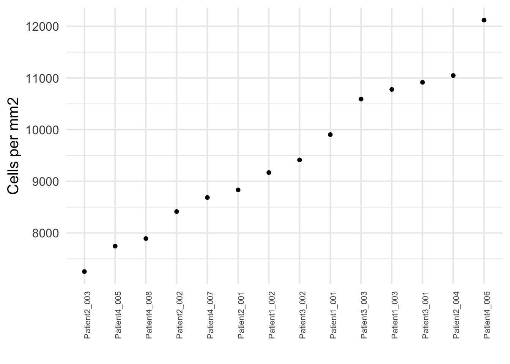
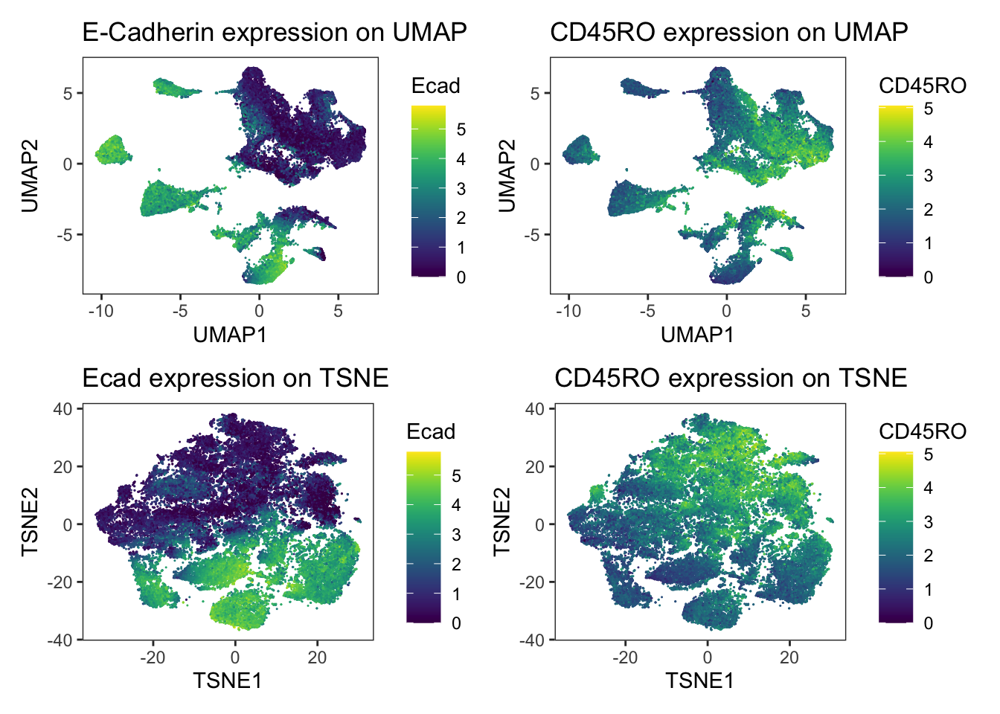
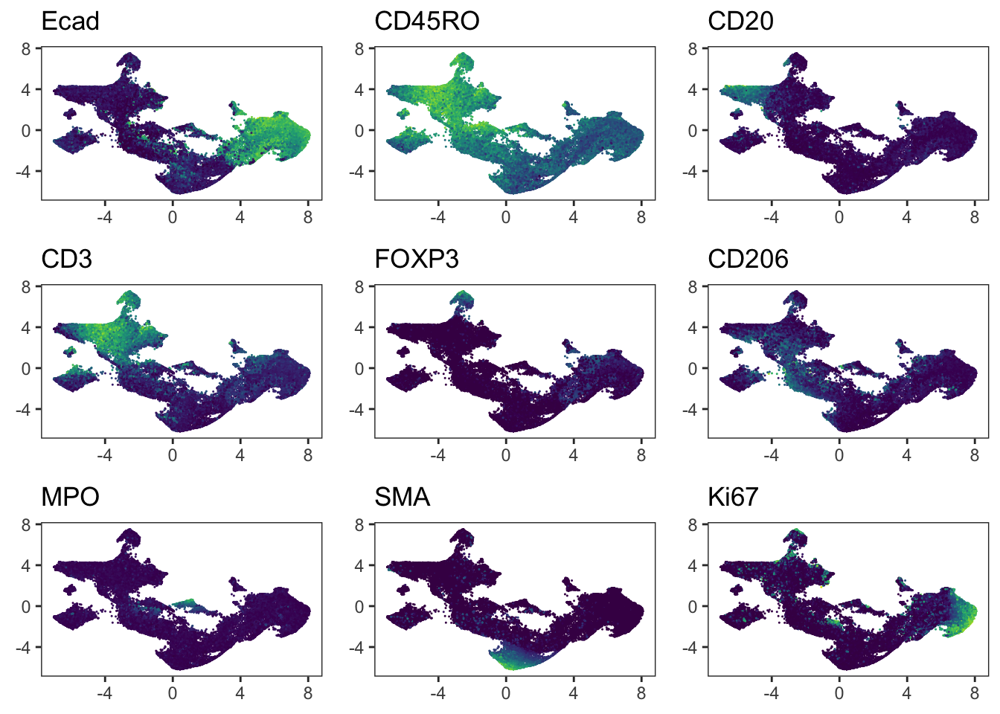
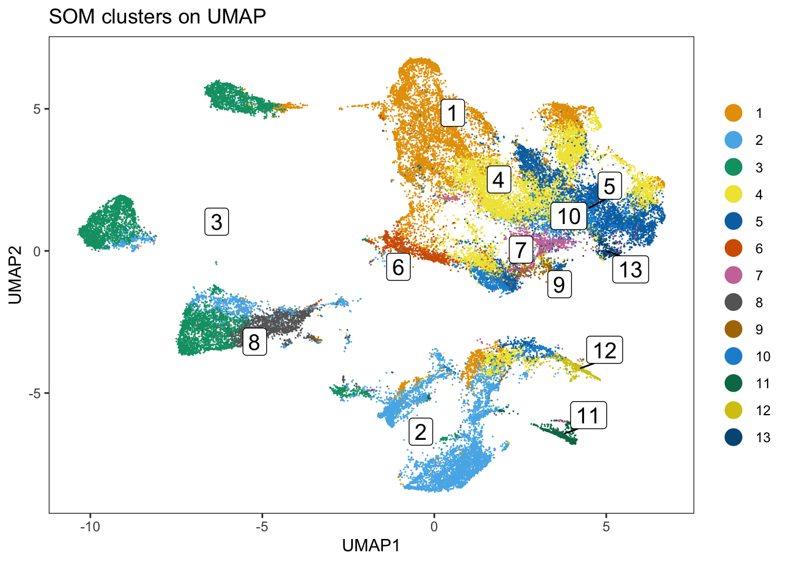
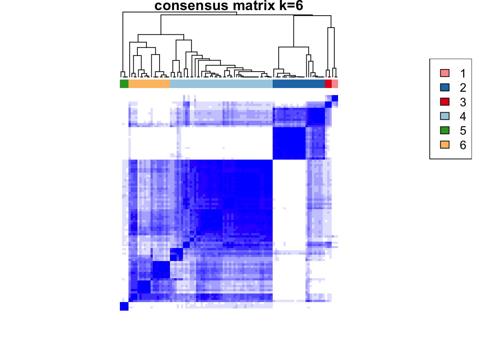
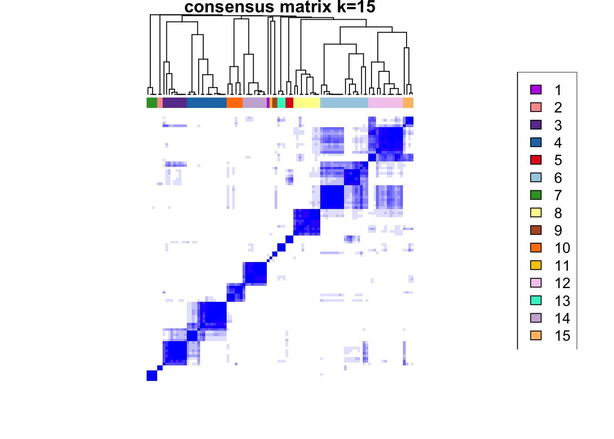
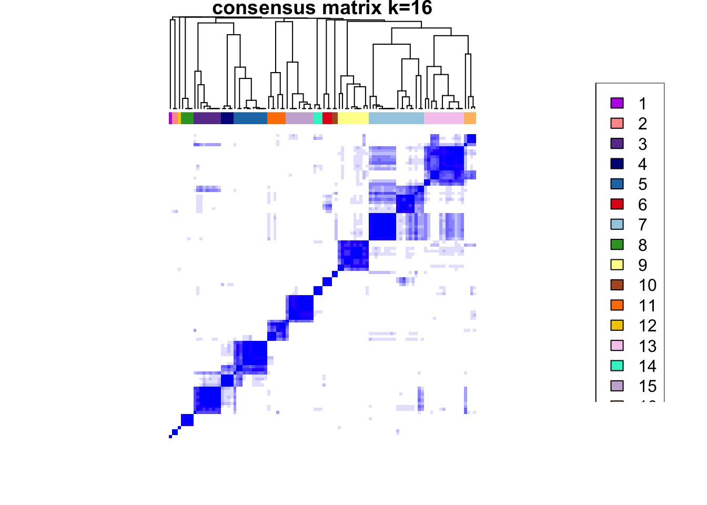
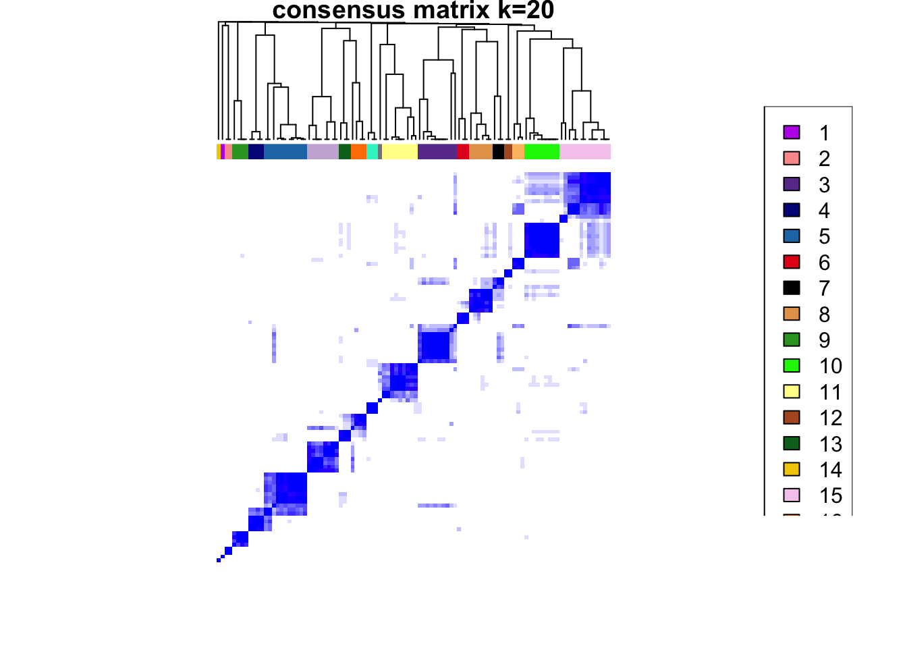
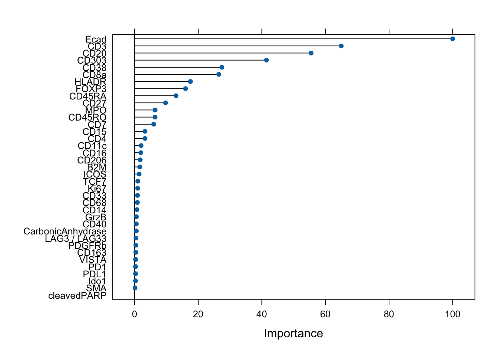
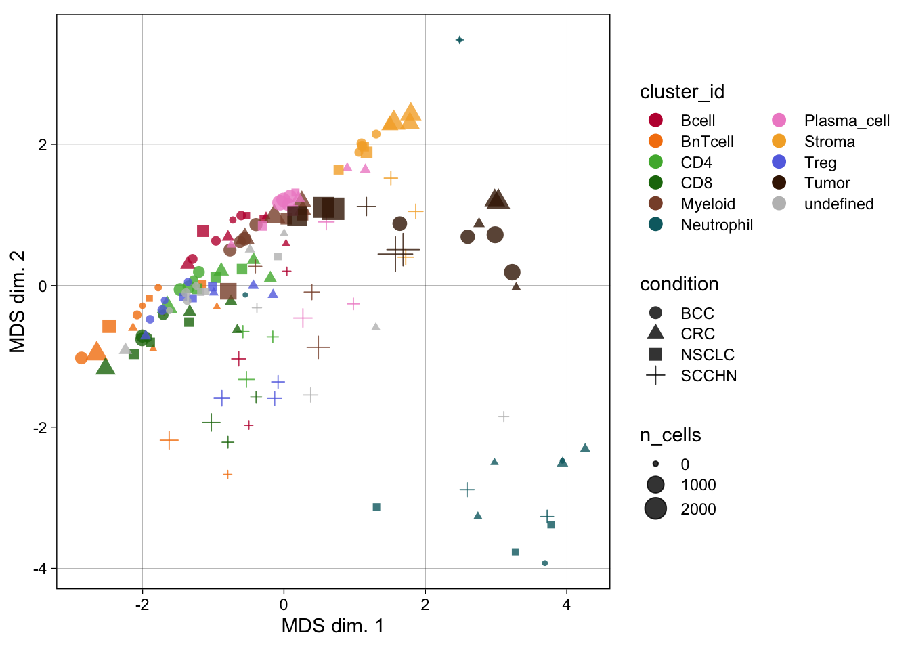

![]()
### Required libraries
# if (!require("BiocManager", quietly = TRUE))
# install.packages("BiocManager")
# BiocManager::install(
# c(
# "rmarkdown", "bookdown", "pheatmap", "viridis", "zoo",
# "devtools", "testthat", "tiff", "distill", "ggrepel",
# "patchwork", "mclust", "RColorBrewer", "uwot", "Rtsne",
# "harmony", "Seurat", "SeuratObject", "cowplot", "kohonen",
# "caret", "randomForest", "ggridges", "cowplot",
# "gridGraphics", "scales", "tiff", "harmony", "Matrix",
# "CATALYST", "scuttle", "scater", "dittoSeq",
# "tidyverse", "BiocStyle", "batchelor", "bluster", "scran",
# "lisaClust", "spicyR", "iSEE", "imcRtools", "cytomapper",
# "imcdatasets", "cytoviewer"
# ),
# force = TRUE
# )
library(here)
library(fs)
library(qs)
library(tidyverse)
library(ggrepel)
library(ggridges)
library(patchwork)
library(cowplot)
library(RColorBrewer)
library(viridis)
library(imcRtools)
library(cytomapper)
library(dittoSeq)
library(CATALYST)
library(pheatmap)
library(BiocParallel)
library(tiff)
library(EBImage)
library(mclust)
library(batchelor)
library(scater)
library(viridis)
library(harmony)
library(BiocSingular)
library(Seurat)
library(SeuratObject)
library(Rphenograph)
library(igraph)
library(bluster)
library(scran)
library(caret)
library(lisaClust)
library(scuttle)
library(ComplexHeatmap)
library(circlize)
### Project directory
dir <- here("projects/2024_IMC_Profile")
set.seed(20240419)Initial general setup
Data preparation
IMC example data is from here
Download example data
### Create directory for data
fs::dir_create(dir, "data/steinbock")
### Download sample/patient metadata information
download.file(
"https://zenodo.org/record/7575859/files/sample_metadata.csv",
destfile = here(dir, "data/sample_metadata.csv")
)
### Download intensities
url <- "https://zenodo.org/record/7624451/files/intensities.zip"
destfile <- here(dir, "data/steinbock/intensities.zip")
download.file(url, destfile)
unzip(destfile, exdir = here(dir, "data/steinbock"), overwrite = TRUE)
unlink(destfile)
### Download regionprops
url <- "https://zenodo.org/record/7624451/files/regionprops.zip"
destfile <- here(dir, "data/steinbock/regionprops.zip")
download.file(url, destfile)
unzip(destfile, exdir = here(dir, "data/steinbock"), overwrite = TRUE)
unlink(destfile)
### Download neighbors
url <- "https://zenodo.org/record/7624451/files/neighbors.zip"
destfile <- here(dir, "data/steinbock/neighbors.zip")
download.file(url, destfile)
unzip(destfile, exdir = here(dir, "data/steinbock"), overwrite = TRUE)
unlink(destfile)
### Download images
url <- "https://zenodo.org/record/7624451/files/img.zip"
destfile <- here(dir, "data/steinbock/img.zip")
download.file(url, destfile)
unzip(destfile, exdir = here(dir, "data/steinbock"), overwrite = TRUE)
unlink(destfile)
### Download masks
url <- "https://zenodo.org/record/7624451/files/masks_deepcell.zip"
destfile <- here(dir, "data/steinbock/masks_deepcell.zip")
download.file(url, destfile)
unzip(destfile, exdir = here(dir, "data/steinbock"), overwrite = TRUE)
unlink(destfile)
### Download individual files
download.file(
"https://zenodo.org/record/7624451/files/panel.csv",
here(dir, "data/steinbock/panel.csv")
)
download.file(
"https://zenodo.org/record/7624451/files/images.csv",
here(dir, "data/steinbock/images.csv")
)
download.file(
"https://zenodo.org/record/7624451/files/steinbock.sh",
here(dir, "data/steinbock/steinbock.sh")
)
### Files for spillover matrix estimation
download.file(
"https://zenodo.org/record/7575859/files/compensation.zip",
here(dir, "data/compensation.zip")
)
unzip(
here(dir, "data/compensation.zip"),
exdir = here(dir, "data"), overwrite = TRUE
)
unlink(here(dir, "data/compensation.zip"))
### Gated cells
download.file(
"https://zenodo.org/record/8095133/files/gated_cells.zip",
here(dir, "data/gated_cells.zip")
)
unzip(
here(dir, "data/gated_cells.zip"),
exdir = here(dir, "data"), overwrite = TRUE
)
unlink(here(dir, "data/gated_cells.zip"))Preprocess data
### Read steinbock generated data into a SpatialExperiment object
spe <- imcRtools::read_steinbock(here(dir, "data/steinbock/"))
speclass: SpatialExperiment
dim: 40 47859
metadata(0):
assays(1): counts
rownames(40): MPO HistoneH3 ... DNA1 DNA2
rowData names(12): channel name ... Final.Concentration...Dilution
uL.to.add
colnames: NULL
colData names(8): sample_id ObjectNumber ... width_px height_px
reducedDimNames(0):
mainExpName: NULL
altExpNames(0):
spatialCoords names(2) : Pos_X Pos_Y
imgData names(1): sample_id### Summarized pixel intensities
counts(spe)[1:5, 1:5] [,1] [,2] [,3] [,4] [,5]
MPO 0.5751064 0.4166667 0.4975494 0.890154 0.1818182
HistoneH3 3.1273082 11.3597883 2.3841440 7.712961 1.4512715
SMA 0.2600939 1.6720383 0.1535190 1.193948 0.2986703
CD16 2.0347747 2.5880536 2.2943074 15.629083 0.6084220
CD38 0.2530137 0.6826669 1.1902979 2.126060 0.2917793### Metadata
head(colData(spe))DataFrame with 6 rows and 8 columns
sample_id ObjectNumber area axis_major_length axis_minor_length
<character> <numeric> <numeric> <numeric> <numeric>
1 Patient1_001 1 12 7.40623 1.89529
2 Patient1_001 2 24 16.48004 1.96284
3 Patient1_001 3 17 9.85085 1.98582
4 Patient1_001 4 24 8.08290 3.91578
5 Patient1_001 5 22 8.79367 3.11653
6 Patient1_001 6 25 9.17436 3.46929
eccentricity width_px height_px
<numeric> <numeric> <numeric>
1 0.966702 600 600
2 0.992882 600 600
3 0.979470 600 600
4 0.874818 600 600
5 0.935091 600 600
6 0.925744 600 600### SpatialExperiment container stores locations of all cells in the
### spatialCoords slot
head(spatialCoords(spe)) Pos_X Pos_Y
[1,] 468.5833 0.4166667
[2,] 515.8333 0.4166667
[3,] 587.2353 0.4705882
[4,] 192.2500 1.2500000
[5,] 231.7727 0.9090909
[6,] 270.1600 1.0400000colPair(spe, "neighborhood")SelfHits object with 257116 hits and 0 metadata columns:
from to
<integer> <integer>
[1] 1 27
[2] 1 55
[3] 2 10
[4] 2 44
[5] 2 81
... ... ...
[257112] 47858 47836
[257113] 47859 47792
[257114] 47859 47819
[257115] 47859 47828
[257116] 47859 47854
-------
nnode: 47859head(rowData(spe))DataFrame with 6 rows and 12 columns
channel name keep ilastik deepcell cellpose
<character> <character> <numeric> <numeric> <numeric> <logical>
MPO Y89 MPO 1 NA NA NA
HistoneH3 In113 HistoneH3 1 1 1 NA
SMA In115 SMA 1 NA NA NA
CD16 Pr141 CD16 1 NA NA NA
CD38 Nd142 CD38 1 NA NA NA
HLADR Nd143 HLADR 1 NA NA NA
Tube.Number Target Antibody.Clone Stock.Concentration
<numeric> <character> <character> <numeric>
MPO 2101 Myeloperoxidase MPO Polyclonal MPO 500
HistoneH3 2113 Histone H3 D1H2 500
SMA 1914 SMA 1A4 500
CD16 2079 CD16 EPR16784 500
CD38 2095 CD38 EPR4106 500
HLADR 2087 HLA-DR TAL 1B5 500
Final.Concentration...Dilution uL.to.add
<character> <character>
MPO 4 ug/mL 0.8
HistoneH3 1 ug/mL 0.2
SMA 0.25 ug/mL 0.05
CD16 5 ug/mL 1
CD38 2.5 ug/mL 0.5
HLADR 1 ug/mL 0.2### Add additional metadata: generate unique identifiers per cell
colnames(spe) <- paste0(spe$sample_id, "_", spe$ObjectNumber)
### Read patient metadata
meta <- read_csv(here(dir, "data/sample_metadata.csv"), show_col_types = FALSE)
### Extract patient id and ROI id from sample name
spe$patient_id <- str_extract(spe$sample_id, "Patient[1-4]")
spe$ROI <- str_extract(spe$sample_id, "00[1-8]")
### Store cancer type in SPE object
spe$indication <- meta$Indication[match(spe$patient_id, meta$`Sample ID`)]
unique(spe$patient_id)[1] "Patient1" "Patient2" "Patient3" "Patient4"unique(spe$ROI)[1] "001" "002" "003" "004" "005" "006" "007" "008"unique(spe$indication)[1] "SCCHN" "BCC" "NSCLC" "CRC" ### Transform counts
p1 <- dittoRidgePlot(
spe, var = "CD3", group.by = "patient_id", assay = "counts"
) +
ggtitle("CD3 - before transformation")
### Perform counts transformation using an inverse hyperbolic sine function
assay(spe, "exprs") <- asinh(counts(spe) / 1)
p2 <- dittoRidgePlot(
spe, var = "CD3", group.by = "patient_id", assay = "exprs"
) +
ggtitle("CD3 - after transformation")
wrap_plots(p1, p2, ncol = 2) +
plot_layout(guides = "collect") & theme(legend.position = "bottom")Picking joint bandwidth of 0.22Picking joint bandwidth of 0.0984### Add Feature meta for easy specifies the markers of interest.
rowData(spe)$use_channel <- !grepl("DNA|Histone", rownames(spe))
### Define color schemes for different metadata entries of the data
color_vectors <- list()
ROI <- setNames(
brewer.pal(length(unique(spe$ROI)), name = "BrBG"),
unique(spe$ROI)
)
patient_id <- setNames(
brewer.pal(length(unique(spe$patient_id)), name = "Set1"),
unique(spe$patient_id)
)
sample_id <- setNames(
c(
brewer.pal(6, "YlOrRd")[3:5],
brewer.pal(6, "PuBu")[3:6],
brewer.pal(6, "YlGn")[3:5],
brewer.pal(6, "BuPu")[3:6]
),
unique(spe$sample_id)
)
indication <- setNames(
brewer.pal(length(unique(spe$indication)), name = "Set2"),
unique(spe$indication)
)
color_vectors$ROI <- ROI
color_vectors$patient_id <- patient_id
color_vectors$sample_id <- sample_id
color_vectors$indication <- indication
metadata(spe)$color_vectors <- color_vectorsRead in images
images <- loadImages(here(dir, "data/steinbock/img/"))All files in the provided location will be read in.masks <- loadImages(here(dir, "data/steinbock/masks_deepcell/"), as.is = TRUE)All files in the provided location will be read in.### Make sure that the channel order is identical between the single-cell data and the images
channelNames(images) <- rownames(spe)
imagesCytoImageList containing 14 image(s)
names(14): Patient1_001 Patient1_002 Patient1_003 Patient2_001 Patient2_002 Patient2_003 Patient2_004 Patient3_001 Patient3_002 Patient3_003 Patient4_005 Patient4_006 Patient4_007 Patient4_008
Each image contains 40 channel(s)
channelNames(40): MPO HistoneH3 SMA CD16 CD38 HLADR CD27 CD15 CD45RA CD163 B2M CD20 CD68 Ido1 CD3 LAG3 / LAG33 CD11c PD1 PDGFRb CD7 GrzB PDL1 TCF7 CD45RO FOXP3 ICOS CD8a CarbonicAnhydrase CD33 Ki67 VISTA CD40 CD4 CD14 Ecad CD303 CD206 cleavedPARP DNA1 DNA2 [1] TRUE### Extract patient id from image name
patient_id <- str_extract(names(images), "Patient[1-4]")
### Retrieve cancer type per patient from metadata file
indication <- meta$Indication[match(patient_id, meta$`Sample ID`)]
### Store patient and image level information in elementMetadata
mcols(images) <- mcols(masks) <- DataFrame(
sample_id = names(images),
patient_id = patient_id,
indication = indication
)Save data
Spillover correction
Generate the spillover matrix
### Create SingleCellExperiment from TXT files
sce <- readSCEfromTXT(here(dir, "data/compensation/"))Spotted channels: Y89, In113, In115, Pr141, Nd142, Nd143, Nd144, Nd145, Nd146, Sm147, Nd148, Sm149, Nd150, Eu151, Sm152, Eu153, Sm154, Gd155, Gd156, Gd158, Tb159, Gd160, Dy161, Dy162, Dy163, Dy164, Ho165, Er166, Er167, Er168, Tm169, Er170, Yb171, Yb172, Yb173, Yb174, Lu175, Yb176
Acquired channels: Ar80, Y89, In113, In115, Xe131, Xe134, Ba136, La138, Pr141, Nd142, Nd143, Nd144, Nd145, Nd146, Sm147, Nd148, Sm149, Nd150, Eu151, Sm152, Eu153, Sm154, Gd155, Gd156, Gd158, Tb159, Gd160, Dy161, Dy162, Dy163, Dy164, Ho165, Er166, Er167, Er168, Tm169, Er170, Yb171, Yb172, Yb173, Yb174, Lu175, Yb176, Ir191, Ir193, Pt196, Pb206
Channels spotted but not acquired:
Channels acquired but not spotted: Ar80, Xe131, Xe134, Ba136, La138, Ir191, Ir193, Pt196, Pb206### Quality control
### Log10 median pixel counts per spot and channel
plotSpotHeatmap(sce)### Thresholded on 200 pixel counts
plotSpotHeatmap(sce, log = FALSE, threshold = 200)
### Optional pixel binning
### Define grouping
bin_size = 10
sce2 <- binAcrossPixels(sce, bin_size = bin_size)
### Log10 median pixel counts per spot and channel
plotSpotHeatmap(sce2)### Thresholded on 200 pixel counts
plotSpotHeatmap(sce2, log = FALSE, threshold = 200)
### Filtering incorrectly assigned pixels
bc_key <- as.numeric(unique(sce$sample_mass))
bc_key <- bc_key[order(bc_key)]
sce <- assignPrelim(sce, bc_key = bc_key)Debarcoding data... o ordering o classifying eventsNormalizing...Computing deltas...sce <- estCutoffs(sce)
sce <- applyCutoffs(sce)
### Visualize the correctly and incorrectly assigned pixels
cur_table <- table(sce$bc_id, sce$sample_mass)
pheatmap(
log10(cur_table + 1),
cluster_rows = FALSE,
cluster_cols = FALSE
)
### Compute the fraction of unassigned pixels per spot
cur_table["0", ] / colSums(cur_table) 113 115 141 142 143 144 145 146 147 148 149
0.1985 0.1060 0.2575 0.3195 0.3190 0.3825 0.3545 0.4280 0.3570 0.4770 0.4200
150 151 152 153 154 155 156 158 159 160 161
0.4120 0.4025 0.4050 0.4630 0.4190 0.4610 0.3525 0.4020 0.4655 0.4250 0.5595
162 163 164 165 166 167 168 169 170 171 172
0.4340 0.4230 0.4390 0.4055 0.5210 0.3900 0.3285 0.3680 0.5015 0.4900 0.5650
173 174 175 176 89
0.3125 0.4605 0.4710 0.2845 0.3015 sce <- filterPixels(sce, minevents = 40, correct_pixels = TRUE)
### Compute spillover matrix
sce <- computeSpillmat(sce)
isotope_list <- CATALYST::isotope_list
isotope_list$Ar <- 80
plotSpillmat(sce, isotope_list = isotope_list)Warning: The `guide` argument in `scale_*()` cannot be `FALSE`. This was deprecated in
ggplot2 3.3.4.
ℹ Please use "none" instead.
ℹ The deprecated feature was likely used in the CATALYST package.
Please report the issue at <https://github.com/HelenaLC/CATALYST/issues>.
Single-cell data compensation
spe <- qread(here(dir, "data/spe.qs"))
rowData(spe)$channel_name <- paste0(rowData(spe)$channel, "Di")
spe <- compCytof(
spe, sm,
transform = TRUE, cofactor = 1,
isotope_list = isotope_list,
overwrite = FALSE
)
### Check the effect of channel spillover compensation
before <- dittoScatterPlot(
spe, x.var = "Ecad", y.var = "CD303",
assay.x = "exprs", assay.y = "exprs"
) +
ggtitle("Before compensation")
after <- dittoScatterPlot(
spe, x.var = "Ecad", y.var = "CD303",
assay.x = "compexprs", assay.y = "compexprs"
) +
ggtitle("After compensation")
wrap_plots(before, after)assay(spe, "counts") <- assay(spe, "compcounts")
assay(spe, "exprs") <- assay(spe, "compexprs")
assay(spe, "compcounts") <- assay(spe, "compexprs") <- NULLImage compensation
images <- qread(here(dir, "data/images.qs"))
channelNames(images) <- rowData(spe)$channel_name
adapted_sm <- adaptSpillmat(
sm, channelNames(images),
isotope_list = isotope_list
)
images_comp <- compImage(
images, adapted_sm,
BPPARAM = MulticoreParam()
)
### Visualize the image before and after compensation
# Before compensation
plotPixels(
images[5], colour_by = "Yb173Di",
image_title = list(text = "Yb173 (Ecad) - before", position = "topleft"),
legend = NULL, bcg = list(Yb173Di = c(0, 4, 1))
)
plotPixels(
images[5], colour_by = "Yb174Di",
image_title = list(text = "Yb174 (CD303) - before", position = "topleft"),
legend = NULL, bcg = list(Yb174Di = c(0, 4, 1))
)
# After compensation
plotPixels(
images_comp[5], colour_by = "Yb173Di",
image_title = list(text = "Yb173 (Ecad) - after", position = "topleft"),
legend = NULL, bcg = list(Yb173Di = c(0, 4, 1))
)
plotPixels(
images_comp[5], colour_by = "Yb174Di",
image_title = list(text = "Yb174 (CD303) - after", position = "topleft"),
legend = NULL, bcg = list(Yb174Di = c(0, 4, 1))
)
### Re-set the channelNames to their biological targtes
channelNames(images_comp) <- rownames(spe)Write out compensated images
fs::dir_create(here(dir, "data/comp_img"))
lapply(
names(images_comp), function(x) {
writeImage(as.array(images_comp[[x]]) / (2^16 - 1),
paste0(dir, "/data/comp_img/", x, ".tiff"),
bits.per.sample = 16)
}
)Image and cell quality control
Segmentation quality control
### Select 3 random images
set.seed(20220118)
img_ids <- sample(seq_along(images), 3)
### Image- and channel-wise min-max normalization and scaled to a range of 0-1
cur_images <- images[img_ids]
cur_images <- cytomapper::normalize(cur_images, separateImages = TRUE)
### Clipping the maximum intensity to 0.2
cur_images <- cytomapper::normalize(cur_images, inputRange = c(0, 0.2))
### Segmentation approach here appears to correctly segment cells
cytomapper::plotPixels(
cur_images,
mask = masks[img_ids],
img_id = "sample_id",
missing_colour = "white",
colour_by = c("CD163", "CD20", "CD3", "Ecad", "DNA1"),
colour = list(
CD163 = c("black", "yellow"),
CD20 = c("black", "red"),
CD3 = c("black", "green"),
Ecad = c("black", "cyan"),
DNA1 = c("black", "blue")
),
image_title = NULL,
legend = list(
colour_by.title.cex = 0.7,
colour_by.labels.cex = 0.7
)
)
### Heatmap to observe cell segmentation quality and
### potentially also antibody specificity issues
### Sub-sample the dataset to 2000 cells
cur_cells <- sample(seq_len(ncol(spe)), 2000)
### Epithelial cells (Ecad+) and immune cells (CD45RO+) can be differentiate
### Some of the markers are detected in specific cells (e.g., Ki67, CD20, Ecad) ### while others are more broadly expressed across cells (e.g., HLADR, B2M, CD4).
dittoHeatmap(
spe[, cur_cells],
genes = rownames(spe)[rowData(spe)$use_channel],
assay = "exprs",
cluster_cols = TRUE,
scale = "none",
heatmap.colors = viridis(100),
annot.by = "indication",
annotation_colors = list(
indication = metadata(spe)$color_vectors$indication
)
)
Image_level quality control
### Average SNR versus the average signal intensity across all images
cur_snr <- lapply(names(images), function(x){
img <- images[[x]]
mat <- apply(img, 3, function(ch){
# Otsu threshold
thres <- otsu(ch, range = c(min(ch), max(ch)), levels = 65536)
# Signal-to-noise ratio
snr <- mean(ch[ch > thres]) / mean(ch[ch <= thres])
# Signal intensity
ps <- mean(ch[ch > thres])
return(c(snr = snr, ps = ps))
})
t(mat) |> as.data.frame() |>
mutate(image = x,
marker = colnames(mat)) |>
pivot_longer(cols = c(snr, ps))
})
cur_snr <- do.call(rbind, cur_snr)
cur_snr |>
group_by(marker, name) |>
summarize(log_mean = log2(mean(value))) |>
pivot_wider(names_from = name, values_from = log_mean) |>
ggplot() +
geom_point(aes(ps, snr)) +
geom_label_repel(aes(ps, snr, label = marker)) +
theme_minimal(base_size = 15) + ylab("Signal-to-noise ratio [log2]") +
xlab("Signal intensity [log2]")`summarise()` has grouped output by 'marker'. You can override using the
`.groups` argument.Warning: ggrepel: 9 unlabeled data points (too many overlaps). Consider
increasing max.overlaps### Remove markers that have a positive signal of below 2 per image
cur_snr <- cur_snr |>
pivot_wider(names_from = name, values_from = value) |>
filter(ps > 2) |>
pivot_longer(cols = c(snr, ps))
cur_snr |>
group_by(marker, name) |>
summarize(log_mean = log2(mean(value))) |>
pivot_wider(names_from = name, values_from = log_mean) |>
ggplot() +
geom_point(aes(ps, snr)) +
geom_label_repel(aes(ps, snr, label = marker)) +
theme_minimal(base_size = 15) + ylab("Signal-to-noise ratio [log2]") +
xlab("Signal intensity [log2]")`summarise()` has grouped output by 'marker'. You can override using the
`.groups` argument.Warning: ggrepel: 7 unlabeled data points (too many overlaps). Consider
increasing max.overlaps
### Compute the percentage of covered image area
cell_density <- colData(spe) |>
as.data.frame() |>
group_by(sample_id) |>
# Compute the number of pixels covered by cells and
# the total number of pixels
summarize(cell_area = sum(area),
no_pixels = mean(width_px) * mean(height_px)) |>
# Divide the total number of pixels
# by the number of pixels covered by cells
mutate(covered_area = cell_area / no_pixels)
### Visualize the image area covered by cells per image
ggplot(cell_density) +
geom_point(aes(reorder(sample_id,covered_area), covered_area)) +
theme_minimal(base_size = 15) +
theme(axis.text.x = element_text(angle = 90, hjust = 1, size = 15)) +
ylim(c(0, 1)) +
ylab("% covered area") + xlab("")### Normalize and clip images
cur_images <- images[c("Patient4_005", "Patient4_007")]
cur_images <- cytomapper::normalize(cur_images, separateImages = TRUE)
cur_images <- cytomapper::normalize(cur_images, inputRange = c(0, 0.2))
plotPixels(cur_images,
mask = masks[c("Patient4_005", "Patient4_007")],
img_id = "sample_id",
missing_colour = "white",
colour_by = c("CD163", "CD20", "CD3", "Ecad", "DNA1"),
colour = list(CD163 = c("black", "yellow"),
CD20 = c("black", "red"),
CD3 = c("black", "green"),
Ecad = c("black", "cyan"),
DNA1 = c("black", "blue")),
legend = list(colour_by.title.cex = 0.7,
colour_by.labels.cex = 0.7))### Visualize the mean marker expression per image to identify images with outlying marker expression
image_mean <- scuttle::aggregateAcrossCells(
spe,
ids = spe$sample_id,
statistics="mean",
use.assay.type = "counts"
)
assay(image_mean, "exprs") <- asinh(counts(image_mean))
dittoHeatmap(
image_mean,
genes = rownames(spe)[rowData(spe)$use_channel],
assay = "exprs", cluster_cols = TRUE, scale = "none",
heatmap.colors = viridis(100),
annot.by = c("indication", "patient_id", "ROI"),
annotation_colors = list(
indication = metadata(spe)$color_vectors$indication,
patient_id = metadata(spe)$color_vectors$patient_id,
ROI = metadata(spe)$color_vectors$ROI
),
show_colnames = TRUE
) 
Cell_level quality control
set.seed(220224)
mat <- sapply(seq_len(nrow(spe)), function(x){
cur_exprs <- assay(spe, "exprs")[x,]
cur_counts <- assay(spe, "counts")[x,]
cur_model <- Mclust(cur_exprs, G = 2)
mean1 <- mean(cur_counts[cur_model$classification == 1])
mean2 <- mean(cur_counts[cur_model$classification == 2])
signal <- ifelse(mean1 > mean2, mean1, mean2)
noise <- ifelse(mean1 > mean2, mean2, mean1)
return(c(snr = signal/noise, ps = signal))
})
cur_snr <- t(mat) |> as.data.frame() |>
mutate(marker = rownames(spe))
cur_snr |> ggplot() +
geom_point(aes(log2(ps), log2(snr))) +
geom_label_repel(aes(log2(ps), log2(snr), label = marker)) +
theme_minimal(base_size = 15) + ylab("Signal-to-noise ratio [log2]") +
xlab("Signal intensity [log2]")Warning: ggrepel: 2 unlabeled data points (too many overlaps). Consider
increasing max.overlaps### Observe the distributions of cell size across the individual images
dittoPlot(spe, var = "area",
group.by = "sample_id",
plots = "boxplot") +
ylab("Cell area") + xlab("")summary(spe$area) Min. 1st Qu. Median Mean 3rd Qu. Max.
5.00 47.00 70.00 76.48 98.00 466.00 sum(spe$area < 5)[1] 0spe <- spe[,spe$area >= 5]
### Absolute measure of cell density
cell_density <- colData(spe) |>
as.data.frame() |>
group_by(sample_id) |>
summarize(cell_count = n(),
no_pixels = mean(width_px) * mean(height_px)) |>
mutate(cells_per_mm2 = cell_count/(no_pixels/1000000))
ggplot(cell_density) +
geom_point(aes(reorder(sample_id,cells_per_mm2), cells_per_mm2)) +
theme_minimal(base_size = 15) +
theme(axis.text.x = element_text(angle = 90, hjust = 1, size = 8)) +
ylab("Cells per mm2") + xlab("")
### Observing staining differences between samples or batches of samples
multi_dittoPlot(
spe,
vars = rownames(spe)[rowData(spe)$use_channel],
group.by = "patient_id", plots = "ridgeplot",
assay = "exprs",
color.panel = metadata(spe)$color_vectors$patient_id
)Picking joint bandwidth of 0.0118Warning: No shared levels found between `names(values)` of the manual scale and the
data's colour values.Picking joint bandwidth of 0.0247Warning: No shared levels found between `names(values)` of the manual scale and the
data's colour values.Picking joint bandwidth of 0.0809Warning: No shared levels found between `names(values)` of the manual scale and the
data's colour values.Picking joint bandwidth of 0.0408Warning: No shared levels found between `names(values)` of the manual scale and the
data's colour values.Picking joint bandwidth of 0.163Warning: No shared levels found between `names(values)` of the manual scale and the
data's colour values.Picking joint bandwidth of 0.0766Warning: No shared levels found between `names(values)` of the manual scale and the
data's colour values.Picking joint bandwidth of 0.083Warning: No shared levels found between `names(values)` of the manual scale and the
data's colour values.Picking joint bandwidth of 0.0675Warning: No shared levels found between `names(values)` of the manual scale and the
data's colour values.Picking joint bandwidth of 0.105Warning: No shared levels found between `names(values)` of the manual scale and the
data's colour values.Picking joint bandwidth of 0.0795Warning: No shared levels found between `names(values)` of the manual scale and the
data's colour values.Picking joint bandwidth of 0.0444Warning: No shared levels found between `names(values)` of the manual scale and the
data's colour values.Picking joint bandwidth of 0.107Warning: No shared levels found between `names(values)` of the manual scale and the
data's colour values.Picking joint bandwidth of 0.0599Warning: No shared levels found between `names(values)` of the manual scale and the
data's colour values.Picking joint bandwidth of 0.0992Warning: No shared levels found between `names(values)` of the manual scale and the
data's colour values.Picking joint bandwidth of 0.0211Warning: No shared levels found between `names(values)` of the manual scale and the
data's colour values.Picking joint bandwidth of 0.11Warning: No shared levels found between `names(values)` of the manual scale and the
data's colour values.Picking joint bandwidth of 0.0364Warning: No shared levels found between `names(values)` of the manual scale and the
data's colour values.Picking joint bandwidth of 0.0901Warning: No shared levels found between `names(values)` of the manual scale and the
data's colour values.Picking joint bandwidth of 0.119Warning: No shared levels found between `names(values)` of the manual scale and the
data's colour values.Picking joint bandwidth of 0.0582Warning: No shared levels found between `names(values)` of the manual scale and the
data's colour values.Picking joint bandwidth of 0.0542Warning: No shared levels found between `names(values)` of the manual scale and the
data's colour values.Picking joint bandwidth of 0.0804Warning: No shared levels found between `names(values)` of the manual scale and the
data's colour values.Picking joint bandwidth of 0.106Warning: No shared levels found between `names(values)` of the manual scale and the
data's colour values.Picking joint bandwidth of 0.0306Warning: No shared levels found between `names(values)` of the manual scale and the
data's colour values.Picking joint bandwidth of 0.0469Warning: No shared levels found between `names(values)` of the manual scale and the
data's colour values.Picking joint bandwidth of 0.0825Warning: No shared levels found between `names(values)` of the manual scale and the
data's colour values.Picking joint bandwidth of 0.0485Warning: No shared levels found between `names(values)` of the manual scale and the
data's colour values.Picking joint bandwidth of 0.0845Warning: No shared levels found between `names(values)` of the manual scale and the
data's colour values.Picking joint bandwidth of 0.111Warning: No shared levels found between `names(values)` of the manual scale and the
data's colour values.Picking joint bandwidth of 0.081Warning: No shared levels found between `names(values)` of the manual scale and the
data's colour values.Picking joint bandwidth of 0.0939Warning: No shared levels found between `names(values)` of the manual scale and the
data's colour values.Picking joint bandwidth of 0.0973Warning: No shared levels found between `names(values)` of the manual scale and the
data's colour values.Picking joint bandwidth of 0.15Warning: No shared levels found between `names(values)` of the manual scale and the
data's colour values.Picking joint bandwidth of 0.173Warning: No shared levels found between `names(values)` of the manual scale and the
data's colour values.Picking joint bandwidth of 0.0642Warning: No shared levels found between `names(values)` of the manual scale and the
data's colour values.Picking joint bandwidth of 0.0987Warning: No shared levels found between `names(values)` of the manual scale and the
data's colour values.Picking joint bandwidth of 0.0117Warning: No shared levels found between `names(values)` of the manual scale and the
data's colour values.set.seed(220225)
spe <- scater::runUMAP(
spe, subset_row = rowData(spe)$use_channel, exprs_values = "exprs"
)Found more than one class "dist" in cache; using the first, from namespace 'BiocGenerics'Also defined by 'spam'Found more than one class "dist" in cache; using the first, from namespace 'BiocGenerics'Also defined by 'spam'spe <- scater::runTSNE(
spe, subset_row = rowData(spe)$use_channel, exprs_values = "exprs"
)
reducedDims(spe)List of length 9
names(9): UMAP TSNE fastMNN ... UMAP_harmony seurat UMAP_seurathead(reducedDim(spe, "UMAP")) UMAP1 UMAP2
Patient1_001_1 -4.965459 -2.914412
Patient1_001_2 -4.336567 -2.855069
Patient1_001_3 -4.357023 -2.846398
Patient1_001_4 -3.930147 -2.693578
Patient1_001_5 -6.713229 -1.826328
Patient1_001_6 -6.416659 -2.157444### visualize patient id
p1 <- dittoDimPlot(
spe, var = "patient_id", reduction.use = "UMAP", size = 0.2
) +
scale_color_manual(values = metadata(spe)$color_vectors$patient_id) +
ggtitle("Patient ID on UMAP")Scale for colour is already present.
Adding another scale for colour, which will replace the existing scale.p2 <- dittoDimPlot(
spe, var = "patient_id", reduction.use = "TSNE", size = 0.2
) +
scale_color_manual(values = metadata(spe)$color_vectors$patient_id) +
ggtitle("Patient ID on TSNE")Scale for colour is already present.
Adding another scale for colour, which will replace the existing scale.### visualize region of interest id
p3 <- dittoDimPlot(
spe, var = "ROI", reduction.use = "UMAP", size = 0.2
) +
scale_color_manual(values = metadata(spe)$color_vectors$ROI) +
ggtitle("ROI ID on UMAP")Scale for colour is already present.
Adding another scale for colour, which will replace the existing scale.p4 <- dittoDimPlot(
spe, var = "ROI", reduction.use = "TSNE", size = 0.2
) +
scale_color_manual(values = metadata(spe)$color_vectors$ROI) +
ggtitle("ROI ID on TSNE")Scale for colour is already present.
Adding another scale for colour, which will replace the existing scale.### visualize indication
p5 <- dittoDimPlot(
spe, var = "indication", reduction.use = "UMAP", size = 0.2
) +
scale_color_manual(values = metadata(spe)$color_vectors$indication) +
ggtitle("Indication on UMAP")Scale for colour is already present.
Adding another scale for colour, which will replace the existing scale.p6 <- dittoDimPlot(
spe, var = "indication", reduction.use = "TSNE", size = 0.2
) +
scale_color_manual(values = metadata(spe)$color_vectors$indication) +
ggtitle("Indication on TSNE")Scale for colour is already present.
Adding another scale for colour, which will replace the existing scale.(p1 + p2) / (p3 + p4) / (p5 + p6)### visualize marker expression
p1 <- dittoDimPlot(
spe, var = "Ecad", reduction.use = "UMAP",
assay = "exprs", size = 0.2
) +
scale_color_viridis(name = "Ecad") +
ggtitle("E-Cadherin expression on UMAP")Scale for colour is already present.
Adding another scale for colour, which will replace the existing scale.p2 <- dittoDimPlot(
spe, var = "CD45RO", reduction.use = "UMAP",
assay = "exprs", size = 0.2
) +
scale_color_viridis(name = "CD45RO") +
ggtitle("CD45RO expression on UMAP")Scale for colour is already present.
Adding another scale for colour, which will replace the existing scale.p3 <- dittoDimPlot(
spe, var = "Ecad", reduction.use = "TSNE",
assay = "exprs", size = 0.2
) +
scale_color_viridis(name = "Ecad") +
ggtitle("Ecad expression on TSNE")Scale for colour is already present.
Adding another scale for colour, which will replace the existing scale.p4 <- dittoDimPlot(
spe, var = "CD45RO", reduction.use = "TSNE",
assay = "exprs", size = 0.2
) +
scale_color_viridis(name = "CD45RO") +
ggtitle("CD45RO expression on TSNE")Scale for colour is already present.
Adding another scale for colour, which will replace the existing scale.(p1 + p2) / (p3 + p4)
Note
We observe a strong separation of tumor cells (Ecad+ cells) between the patients. Here, each patient was diagnosed with a different tumor type. The separation of tumor cells could be of biological origin since tumor cells tend to display differences in expression between patients and cancer types and/or of technical origin: the panel only contains a single tumor marker (E-Cadherin) and therefore slight technical differences in staining causes visible separation between cells of different patients. Nevertheless, the immune compartment (CD45RO+ cells) mix between patients and we can rule out systematic staining differences between patients.
Batch effect correction
fastMNN correction
### Perform sample correction
set.seed(220228)
out <- batchelor::fastMNN(
spe,
batch = spe$patient_id,
auto.merge = TRUE,
subset.row = rowData(spe)$use_channel,
assay.type = "exprs"
)Warning in check_numbers(k = k, nu = nu, nv = nv, limit = min(dim(x)) - : more
singular values/vectors requested than availableWarning in (function (A, nv = 5, nu = nv, maxit = 1000, work = nv + 7, reorth =
TRUE, : You're computing too large a percentage of total singular values, use a
standard svd instead.### Check that order of cells is the same
stopifnot(all.equal(colnames(spe), colnames(out)))
### Transfer the correction results to the main spe object
reducedDim(spe, "fastMNN") <- reducedDim(out, "corrected")
### Quality control of correction results
merge_info <- metadata(out)$merge.info
### 1. We observe that Patient4 and Patient2 are most similar with a low batch effect.
### 2. Merging cells of Patient3 into the combined batch of Patient1, Patient2
### and Patient4 resulted in the highest percentage of lost variance and the
### detection of the largest batch effect.
merge_info[, c("left", "right", "batch.size")]DataFrame with 3 rows and 3 columns
left right batch.size
<List> <List> <numeric>
1 Patient4 Patient2 0.366641
2 Patient4,Patient2 Patient1 0.541466
3 Patient4,Patient2,Patient1 Patient3 0.749047merge_info$lost.var Patient1 Patient2 Patient3 Patient4
[1,] 0.000000000 0.030385015 0.00000000 0.048613071
[2,] 0.042567359 0.007911340 0.00000000 0.011963319
[3,] 0.007594552 0.003602307 0.07579009 0.006601185### Recompute the UMAP embedding using the corrected low-dimensional
### coordinates for each cell.
set.seed(220228)
spe <- scater::runUMAP(spe, dimred= "fastMNN", name = "UMAP_mnnCorrected")Found more than one class "dist" in cache; using the first, from namespace 'BiocGenerics'Also defined by 'spam'Found more than one class "dist" in cache; using the first, from namespace 'BiocGenerics'Also defined by 'spam'### Visualize patient id
p1 <- dittoDimPlot(
spe, var = "patient_id", reduction.use = "UMAP", size = 0.2
) +
scale_color_manual(values = metadata(spe)$color_vectors$patient_id) +
ggtitle("Patient ID on UMAP before correction")Scale for colour is already present.
Adding another scale for colour, which will replace the existing scale.p2 <- dittoDimPlot(
spe, var = "patient_id", reduction.use = "UMAP_mnnCorrected", size = 0.2
) +
scale_color_manual(values = metadata(spe)$color_vectors$patient_id) +
ggtitle("Patient ID on UMAP after correction")Scale for colour is already present.
Adding another scale for colour, which will replace the existing scale.### We observe an imperfect merging of Patient3 into all other samples.
### This was already seen when displaying the merging information above.
cowplot::plot_grid(p1, p2)
### Visualize the expression of selected markers across all cells before and
### after batch correction
markers <- c(
"Ecad", "CD45RO", "CD20", "CD3", "FOXP3", "CD206", "MPO", "SMA", "Ki67"
)
### Before correction
plot_list <- multi_dittoDimPlot(
spe, var = markers, reduction.use = "UMAP",
assay = "exprs", size = 0.2, list.out = TRUE
)
plot_list <- lapply(plot_list, function(x) x + scale_color_viridis())Scale for colour is already present.
Adding another scale for colour, which will replace the existing scale.
Scale for colour is already present.
Adding another scale for colour, which will replace the existing scale.
Scale for colour is already present.
Adding another scale for colour, which will replace the existing scale.
Scale for colour is already present.
Adding another scale for colour, which will replace the existing scale.
Scale for colour is already present.
Adding another scale for colour, which will replace the existing scale.
Scale for colour is already present.
Adding another scale for colour, which will replace the existing scale.
Scale for colour is already present.
Adding another scale for colour, which will replace the existing scale.
Scale for colour is already present.
Adding another scale for colour, which will replace the existing scale.
Scale for colour is already present.
Adding another scale for colour, which will replace the existing scale.cowplot::plot_grid(plotlist = plot_list)
### After correction
plot_list <- multi_dittoDimPlot(
spe, var = markers, reduction.use = "UMAP_mnnCorrected",
assay = "exprs", size = 0.2, list.out = TRUE
)
plot_list <- lapply(plot_list, function(x) x + scale_color_viridis())Scale for colour is already present.
Adding another scale for colour, which will replace the existing scale.
Scale for colour is already present.
Adding another scale for colour, which will replace the existing scale.
Scale for colour is already present.
Adding another scale for colour, which will replace the existing scale.
Scale for colour is already present.
Adding another scale for colour, which will replace the existing scale.
Scale for colour is already present.
Adding another scale for colour, which will replace the existing scale.
Scale for colour is already present.
Adding another scale for colour, which will replace the existing scale.
Scale for colour is already present.
Adding another scale for colour, which will replace the existing scale.
Scale for colour is already present.
Adding another scale for colour, which will replace the existing scale.
Scale for colour is already present.
Adding another scale for colour, which will replace the existing scale.### We observe that immune cells across patients are merged after batch
### correction using fastMNN. However, the tumor cells of different patients
### still cluster separately.
cowplot::plot_grid(plotlist = plot_list) 
harmony correction
### harmony returns the corrected low-dimensional coordinates for each cell
spe <- runPCA(
spe,
subset_row = rowData(spe)$use_channel,
exprs_values = "exprs",
ncomponents = 30,
BSPARAM = ExactParam()
)
set.seed(230616)
out <- RunHarmony(spe, group.by.vars = "patient_id")Transposing data matrixInitializing state using k-means centroids initializationHarmony 1/10Harmony 2/10Harmony 3/10Harmony 4/10Harmony 5/10Harmony converged after 5 iterations### Check that order of cells is the same
stopifnot(all.equal(colnames(spe), colnames(out)))
reducedDim(spe, "harmony") <- reducedDim(out, "HARMONY")Found more than one class "dist" in cache; using the first, from namespace 'BiocGenerics'Also defined by 'spam'Found more than one class "dist" in cache; using the first, from namespace 'BiocGenerics'Also defined by 'spam'### visualize patient id
p1 <- dittoDimPlot(
spe, var = "patient_id", reduction.use = "UMAP", size = 0.2
) +
scale_color_manual(values = metadata(spe)$color_vectors$patient_id) +
ggtitle("Patient ID on UMAP before correction")Scale for colour is already present.
Adding another scale for colour, which will replace the existing scale.p2 <- dittoDimPlot(
spe, var = "patient_id", reduction.use = "UMAP_harmony", size = 0.2
) +
scale_color_manual(values = metadata(spe)$color_vectors$patient_id) +
ggtitle("Patient ID on UMAP after correction")Scale for colour is already present.
Adding another scale for colour, which will replace the existing scale.plot_grid(p1, p2)
### Visualize selected marker expression
### Before correction
plot_list <- multi_dittoDimPlot(
spe, var = markers, reduction.use = "UMAP",
assay = "exprs", size = 0.2, list.out = TRUE
)
plot_list <- lapply(plot_list, function(x) x + scale_color_viridis())Scale for colour is already present.
Adding another scale for colour, which will replace the existing scale.Scale for colour is already present.
Adding another scale for colour, which will replace the existing scale.
Scale for colour is already present.
Adding another scale for colour, which will replace the existing scale.
Scale for colour is already present.
Adding another scale for colour, which will replace the existing scale.
Scale for colour is already present.
Adding another scale for colour, which will replace the existing scale.
Scale for colour is already present.
Adding another scale for colour, which will replace the existing scale.
Scale for colour is already present.
Adding another scale for colour, which will replace the existing scale.
Scale for colour is already present.
Adding another scale for colour, which will replace the existing scale.
Scale for colour is already present.
Adding another scale for colour, which will replace the existing scale.plot_grid(plotlist = plot_list)
### After correction
plot_list <- multi_dittoDimPlot(
spe, var = markers, reduction.use = "UMAP_harmony",
assay = "exprs", size = 0.2, list.out = TRUE
)
plot_list <- lapply(plot_list, function(x) x + scale_color_viridis())Scale for colour is already present.
Adding another scale for colour, which will replace the existing scale.
Scale for colour is already present.
Adding another scale for colour, which will replace the existing scale.
Scale for colour is already present.
Adding another scale for colour, which will replace the existing scale.
Scale for colour is already present.
Adding another scale for colour, which will replace the existing scale.
Scale for colour is already present.
Adding another scale for colour, which will replace the existing scale.
Scale for colour is already present.
Adding another scale for colour, which will replace the existing scale.
Scale for colour is already present.
Adding another scale for colour, which will replace the existing scale.
Scale for colour is already present.
Adding another scale for colour, which will replace the existing scale.
Scale for colour is already present.
Adding another scale for colour, which will replace the existing scale.### We observe a more aggressive merging of cells from different patients
### compared to the results after fastMNN correction. Importantly, immune cell
### and epithelial markers are expressed in distinct regions of the UMAP.
plot_grid(plotlist = plot_list) 
Seurat correction
seurat_obj <- as.Seurat(spe, counts = "counts", data = "exprs")Warning: Keys should be one or more alphanumeric characters followed by an
underscore, setting key from UMAP to UMAP_Warning: Keys should be one or more alphanumeric characters followed by an
underscore, setting key from TSNE to TSNE_Warning: Keys should be one or more alphanumeric characters followed by an
underscore, setting key from UMAP to UMAP_Warning: Key 'UMAP_' taken, using 'umapmnncorrected_' insteadWarning: Keys should be one or more alphanumeric characters followed by an
underscore, setting key from PC to PC_Warning: Keys should be one or more alphanumeric characters followed by an
underscore, setting key from UMAP to UMAP_Warning: Key 'UMAP_' taken, using 'umapharmony_' insteadWarning: Key 'PC_' taken, using 'seurat_' insteadWarning: Keys should be one or more alphanumeric characters followed by an
underscore, setting key from UMAP to UMAP_Warning: Key 'UMAP_' taken, using 'umapseurat_' insteadseurat_obj <- AddMetaData(seurat_obj, as.data.frame(colData(spe)))
seurat_list <- SplitObject(seurat_obj, split.by = "patient_id")
### Define the features used for integration and perform PCA on cells of each
### patient individually
features <- rownames(spe)[rowData(spe)$use_channel]
seurat_list <- lapply(
X = seurat_list,
FUN = function(x) {
x <- ScaleData(x, features = features, verbose = FALSE)
x <- RunPCA(x, features = features, verbose = FALSE, approx = FALSE)
return(x)
}
)Warning: Key 'PC_' taken, using 'pca_' insteadWarning: Key 'PC_' taken, using 'pca_' instead
Key 'PC_' taken, using 'pca_' instead
Key 'PC_' taken, using 'pca_' insteadanchors <- FindIntegrationAnchors(
object.list = seurat_list,
anchor.features = features,
reduction = "rpca",
k.anchor = 20
)Scaling features for provided objectsComputing within dataset neighborhoodsFinding all pairwise anchorsProjecting new data onto SVD
Projecting new data onto SVDFinding neighborhoodsFinding anchors Found 53333 anchorsProjecting new data onto SVD
Projecting new data onto SVDFinding neighborhoodsFinding anchors Found 47418 anchorsProjecting new data onto SVD
Projecting new data onto SVDFinding neighborhoodsFinding anchors Found 46957 anchorsProjecting new data onto SVD
Projecting new data onto SVDFinding neighborhoodsFinding anchors Found 55977 anchorsProjecting new data onto SVD
Projecting new data onto SVDFinding neighborhoodsFinding anchors Found 67563 anchorsProjecting new data onto SVD
Projecting new data onto SVDFinding neighborhoodsFinding anchors Found 52131 anchorscombined <- IntegrateData(anchorset = anchors)Merging dataset 2 into 4Extracting anchors for merged samplesFinding integration vectorsWarning in irlba(A = t(x = object), nv = npcs, ...): You're computing too large
a percentage of total singular values, use a standard svd instead.Finding integration vector weightsIntegrating dataMerging dataset 1 into 4 2Extracting anchors for merged samplesFinding integration vectorsWarning in irlba(A = t(x = object), nv = npcs, ...): You're computing too large
a percentage of total singular values, use a standard svd instead.Finding integration vector weightsIntegrating dataMerging dataset 3 into 4 2 1Extracting anchors for merged samplesFinding integration vectorsWarning in irlba(A = t(x = object), nv = npcs, ...): You're computing too large
a percentage of total singular values, use a standard svd instead.Finding integration vector weightsIntegrating dataDefaultAssay(combined) <- "integrated"
combined <- ScaleData(combined, verbose = FALSE)
combined <- RunPCA(combined, npcs = 30, verbose = FALSE, approx = FALSE)
### Check that order of cells is the same
stopifnot(all.equal(colnames(spe), colnames(combined)))
reducedDim(spe, "seurat") <- Embeddings(combined, reduction = "pca")Found more than one class "dist" in cache; using the first, from namespace 'BiocGenerics'Also defined by 'spam'Found more than one class "dist" in cache; using the first, from namespace 'BiocGenerics'Also defined by 'spam'### Visualize patient id
p1 <- dittoDimPlot(
spe, var = "patient_id",
reduction.use = "UMAP", size = 0.2
) +
scale_color_manual(values = metadata(spe)$color_vectors$patient_id) +
ggtitle("Patient ID on UMAP before correction")Scale for colour is already present.
Adding another scale for colour, which will replace the existing scale.p2 <- dittoDimPlot(
spe, var = "patient_id",
reduction.use = "UMAP_seurat", size = 0.2
) +
scale_color_manual(values = metadata(spe)$color_vectors$patient_id) +
ggtitle("Patient ID on UMAP after correction")Scale for colour is already present.
Adding another scale for colour, which will replace the existing scale.plot_grid(p1, p2)### Before correction
plot_list <- multi_dittoDimPlot(
spe, var = markers, reduction.use = "UMAP",
assay = "exprs", size = 0.2, list.out = TRUE
)
plot_list <- lapply(plot_list, function(x) x + scale_color_viridis())Scale for colour is already present.
Adding another scale for colour, which will replace the existing scale.Scale for colour is already present.
Adding another scale for colour, which will replace the existing scale.
Scale for colour is already present.
Adding another scale for colour, which will replace the existing scale.
Scale for colour is already present.
Adding another scale for colour, which will replace the existing scale.
Scale for colour is already present.
Adding another scale for colour, which will replace the existing scale.
Scale for colour is already present.
Adding another scale for colour, which will replace the existing scale.
Scale for colour is already present.
Adding another scale for colour, which will replace the existing scale.
Scale for colour is already present.
Adding another scale for colour, which will replace the existing scale.
Scale for colour is already present.
Adding another scale for colour, which will replace the existing scale.plot_grid(plotlist = plot_list)
### After correction
plot_list <- multi_dittoDimPlot(
spe, var = markers, reduction.use = "UMAP_seurat",
assay = "exprs", size = 0.2, list.out = TRUE
)
plot_list <- lapply(plot_list, function(x) x + scale_color_viridis())Scale for colour is already present.
Adding another scale for colour, which will replace the existing scale.
Scale for colour is already present.
Adding another scale for colour, which will replace the existing scale.
Scale for colour is already present.
Adding another scale for colour, which will replace the existing scale.
Scale for colour is already present.
Adding another scale for colour, which will replace the existing scale.
Scale for colour is already present.
Adding another scale for colour, which will replace the existing scale.
Scale for colour is already present.
Adding another scale for colour, which will replace the existing scale.
Scale for colour is already present.
Adding another scale for colour, which will replace the existing scale.
Scale for colour is already present.
Adding another scale for colour, which will replace the existing scale.
Scale for colour is already present.
Adding another scale for colour, which will replace the existing scale.### Similar to the methods presented above, Seurat integrates immune cells
### correctly. When visualizing the patient IDs, slight patient-to-patient
### differences within tumor cells can be detected.
plot_grid(plotlist = plot_list) 
Cell phenotyping
A common step during single-cell data analysis is the annotation of cells based on their phenotype. Defining cell phenotypes is often subjective and relies on previous biological knowledge.
In highly-multiplexed imaging, target proteins or molecules are manually selected based on the biological question at hand. It narrows down the feature space and facilitates the manual annotation of clusters to derive cell phenotypes.
Rphenograph
mat <- t(assay(spe, "exprs")[rowData(spe)$use_channel, ])
set.seed(230619)
out <- Rphenograph(mat, k = 45)Run Rphenograph starts:
-Input data of 47794 rows and 37 columns
-k is set to 45 Finding nearest neighbors...DONE ~ 57.221 s
Compute jaccard coefficient between nearest-neighbor sets...DONE ~ 20.057 s
Build undirected graph from the weighted links...DONE ~ 2.609 s
Run louvain clustering on the graph ...DONE ~ 5.252 sRun Rphenograph DONE, totally takes 85.139s. Return a community class
-Modularity value: 0.8620567
-Number of clusters: 24clusters <- factor(membership(out[[2]]))
spe$pg_clusters <- clusters
dittoDimPlot(
spe, var = "pg_clusters",
reduction.use = "UMAP", size = 0.2,
do.label = TRUE
) +
ggtitle("Phenograph clusters on UMAP")### We can observe that some of the clusters only contain cells of a single
### patient. This can often be observed in the tumor compartment.
dittoHeatmap(
spe[, cur_cells],
genes = rownames(spe)[rowData(spe)$use_channel],
assay = "exprs", scale = "none",
heatmap.colors = viridis(100),
annot.by = c("pg_clusters", "patient_id"),
annot.colors = c(
dittoColors(1)[1:length(unique(spe$pg_clusters))],
metadata(spe)$color_vectors$patient_id
)
)
### Use the integrated cells in low dimensional embedding for clustering
mat <- reducedDim(spe, "fastMNN")
set.seed(230619)
out <- Rphenograph(mat, k = 45)Run Rphenograph starts:
-Input data of 47794 rows and 36 columns
-k is set to 45 Finding nearest neighbors...DONE ~ 51.466 s
Compute jaccard coefficient between nearest-neighbor sets...DONE ~ 20.096 s
Build undirected graph from the weighted links...DONE ~ 2.728 s
Run louvain clustering on the graph ...DONE ~ 7.708 sRun Rphenograph DONE, totally takes 81.998s. Return a community class
-Modularity value: 0.8453626
-Number of clusters: 25clusters <- factor(membership(out[[2]]))
spe$pg_clusters_corrected <- clusters
dittoDimPlot(
spe, var = "pg_clusters_corrected",
reduction.use = "UMAP_mnnCorrected", size = 0.2,
do.label = TRUE
) +
ggtitle("Phenograph clusters on UMAP, integrated cells")### Clustering using the integrated embedding leads to clusters that contain
### cells of different patients.
dittoHeatmap(
spe[, cur_cells],
genes = rownames(spe)[rowData(spe)$use_channel],
assay = "exprs", scale = "none",
heatmap.colors = viridis(100),
annot.by = c("pg_clusters_corrected", "patient_id"),
annot.colors = c(dittoColors(1)[1:length(unique(spe$pg_clusters_corrected))],
metadata(spe)$color_vectors$patient_id)
)
Shared nearest neighbour graph
mat <- t(assay(spe, "exprs")[rowData(spe)$use_channel, ])
combinations <- clusterSweep(
mat,
BLUSPARAM = SNNGraphParam(),
k = c(10L, 20L),
type = c("rank", "jaccard"),
cluster.fun = "louvain",
BPPARAM = MulticoreParam(RNGseed = 220427)
)
sil <- vapply(
as.list(combinations$clusters),
function(x) mean(approxSilhouette(mat, x)$width),
0
)
ggplot(
data.frame(method = names(sil),
sil = sil)
) +
geom_point(aes(method, sil)) +
theme_classic(base_size = 15) +
theme(axis.text.x = element_text(angle = 90, hjust = 1)) +
xlab("Cluster parameter combination") +
ylab("Average silhouette width")pur <- vapply(
as.list(combinations$clusters),
function(x) mean(neighborPurity(mat, x)$purity),
0
)
ggplot(
data.frame(method = names(pur), pur = pur)
) +
geom_point(aes(method, pur)) +
theme_classic(base_size = 15) +
theme(axis.text.x = element_text(angle = 90, hjust = 1)) +
xlab("Cluster parameter combination") +
ylab("Average neighborhood purity")
set.seed(220620)
clusters <- clusterCells(
spe[rowData(spe)$use_channel,],
assay.type = "exprs",
BLUSPARAM = SNNGraphParam(k=20,
cluster.fun = "louvain",
type = "rank")
)
spe$nn_clusters <- clusters
dittoDimPlot(
spe, var = "nn_clusters",
reduction.use = "UMAP", size = 0.2,
do.label = TRUE
) +
ggtitle("SNN clusters on UMAP")
dittoHeatmap(
spe[,cur_cells],
genes = rownames(spe)[rowData(spe)$use_channel],
assay = "exprs", scale = "none",
heatmap.colors = viridis(100),
annot.by = c("nn_clusters", "patient_id"),
annot.colors = c(dittoColors(1)[1:length(unique(spe$nn_clusters))],
metadata(spe)$color_vectors$patient_id)
)set.seed(220621)
clusters <- clusterCells(
spe,
use.dimred = "fastMNN",
BLUSPARAM = SNNGraphParam(k = 20,
cluster.fun = "louvain",
type = "rank")
)
spe$nn_clusters_corrected <- clusters
dittoDimPlot(
spe, var = "nn_clusters_corrected",
reduction.use = "UMAP_mnnCorrected", size = 0.2,
do.label = TRUE
) +
ggtitle("SNN clusters on UMAP, integrated cells")
dittoHeatmap(
spe[,cur_cells],
genes = rownames(spe)[rowData(spe)$use_channel],
assay = "exprs", scale = "none",
heatmap.colors = viridis(100),
annot.by = c("nn_clusters_corrected","patient_id"),
annot.colors = c(dittoColors(1)[1:length(unique(spe$nn_clusters_corrected))],
metadata(spe)$color_vectors$patient_id)
)Self organizing maps
# Run FlowSOM and ConsensusClusterPlus clustering
set.seed(220410)
spe <- CATALYST::cluster(spe,
features = rownames(spe)[rowData(spe)$use_channel],
maxK = 30)o running FlowSOM clustering...o running ConsensusClusterPlus metaclustering...# Assess cluster stability
delta_area(spe)spe$som_clusters <- cluster_ids(spe, "meta13")
dittoDimPlot(
spe, var = "som_clusters",
reduction.use = "UMAP", size = 0.2,
do.label = TRUE
) +
ggtitle("SOM clusters on UMAP")
dittoHeatmap(
spe[,cur_cells],
genes = rownames(spe)[rowData(spe)$use_channel],
assay = "exprs", scale = "none",
heatmap.colors = viridis(100),
annot.by = c("som_clusters", "patient_id"),
annot.colors = c(dittoColors(1)[1:length(unique(spe$som_clusters))],
metadata(spe)$color_vectors$patient_id)
)library(kohonen)
Attaching package: 'kohonen'The following object is masked from 'package:mclust':
mapThe following object is masked from 'package:purrr':
maplibrary(ConsensusClusterPlus)
### Select integrated cells
mat <- reducedDim(spe, "fastMNN")
### Perform SOM clustering
set.seed(220410)
som.out <- clusterRows(mat, SomParam(100), full = TRUE)
### Cluster the 100 SOM codes into larger clusters
ccp <- ConsensusClusterPlus(
t(som.out$objects$som$codes[[1]]),
maxK = 30,
reps = 100,
distance = "euclidean",
seed = 220410,
plot = NULL
)end fractionclustered
clusteredclusteredclusteredclustered
clustered
clustered
clusteredclustered
clusteredclustered
clusteredclusteredclusteredclustered
clustered
clustered
clustered
clustered
clustered
clusteredclusteredclustered
clustered
clustered
clusteredclustered
clusteredclustered

### Visualize delta area plot
CATALYST:::.plot_delta_area(ccp)
### Link ConsensusClusterPlus clusters with SOM codes and save in object
som.cluster <- ccp[[16]][["consensusClass"]][som.out$clusters]
spe$som_clusters_corrected <- as.factor(som.cluster)
dittoDimPlot(
spe, var = "som_clusters_corrected",
reduction.use = "UMAP_mnnCorrected", size = 0.2,
do.label = TRUE
) +
ggtitle("SOM clusters on UMAP, integrated cells")
dittoHeatmap(
spe[,cur_cells],
genes = rownames(spe)[rowData(spe)$use_channel],
assay = "exprs", scale = "none",
heatmap.colors = viridis(100),
annot.by = c("som_clusters_corrected","patient_id"),
annot.colors = c(dittoColors(1)[1:length(unique(spe$som_clusters_corrected))],
metadata(spe)$color_vectors$patient_id)
)Compare between clustering approaches
Attaching package: 'gridExtra'The following object is masked from 'package:EBImage':
combineThe following object is masked from 'package:Biobase':
combineThe following object is masked from 'package:BiocGenerics':
combineThe following object is masked from 'package:dplyr':
combinetab1 <- table(
paste("Rphenograph", spe$pg_clusters),
paste("SNN", spe$nn_clusters)
)
tab2 <- table(
paste("Rphenograph", spe$pg_clusters),
paste("SOM", spe$som_clusters)
)
tab3 <- table(
paste("SNN", spe$nn_clusters),
paste("SOM", spe$som_clusters)
)
pheatmap(log10(tab1 + 10), color = viridis(100))


Further clustering notes
library(dplyr)
cluster_celltype <- recode(spe$nn_clusters_corrected,
"1" = "Tumor_proliferating",
"2" = "Myeloid",
"3" = "Tumor",
"4" = "Tumor",
"5" = "Stroma",
"6" = "Proliferating",
"7" = "Myeloid",
"8" = "Plasma_cell",
"9" = "CD8",
"10" = "CD4",
"11" = "Neutrophil",
"12" = "Bcell",
"13" = "Stroma")
spe$cluster_celltype <- cluster_celltypeClassfication approach
### Manual labeling of cells
# if (interactive()) {
# images <- qread(here(dir, "data/images.qs"))
# masks <- qread(here(dir, "data/masks.qs"))
# cytomapperShiny(object = spe, mask = masks, image = images,
# cell_id = "ObjectNumber", img_id = "sample_id")
# }
spe <- qread(here(dir, "data/spe.qs"))
### Define color vectors
celltype <- setNames(
c("#3F1B03", "#F4AD31", "#894F36", "#1C750C", "#EF8ECC",
"#6471E2", "#4DB23B", "grey", "#F4800C", "#BF0A3D", "#066970"
),
c("Tumor", "Stroma", "Myeloid", "CD8", "Plasma_cell",
"Treg", "CD4", "undefined", "BnTcell", "Bcell", "Neutrophil")
)
metadata(spe)$color_vectors$celltype <- celltype### Read in and consolidate labeled data
label_files <- list.files(
here(dir, "data/gated_cells"),
full.names = TRUE, pattern = ".rds$"
)
### Read in SPE objects
spes <- lapply(label_files, readRDS)
### Merge SPE objects
concat_spe <- do.call("cbind", spes)'sample_id's are duplicated across 'SpatialExperiment' objects to cbind; appending sample indices.filter_labels <- function(object,
label = "cytomapper_CellLabel") {
cur_tab <- unclass(table(colnames(object), object[[label]]))
cur_labels <- colnames(cur_tab)[apply(cur_tab, 1, which.max)]
names(cur_labels) <- rownames(cur_tab)
cur_labels <- cur_labels[rowSums(cur_tab) == 1]
return(cur_labels)
}
labels <- filter_labels(concat_spe)
cur_spe <- concat_spe[,concat_spe$cytomapper_CellLabel != "Tumor"]
non_tumor_labels <- filter_labels(cur_spe)
additional_cells <- setdiff(names(non_tumor_labels), names(labels))
final_labels <- c(labels, non_tumor_labels[additional_cells])
### Transfer labels to SPE object
spe_labels <- rep("unlabeled", ncol(spe))
names(spe_labels) <- colnames(spe)
spe_labels[names(final_labels)] <- final_labels
spe$cell_labels <- spe_labels
### Number of cells labeled per patient
table(spe$cell_labels, spe$patient_id)
Patient1 Patient2 Patient3 Patient4
Bcell 152 131 234 263
BnTcell 396 37 240 1029
CD4 45 342 167 134
CD8 60 497 137 128
Myeloid 183 378 672 517
Neutrophil 97 4 17 16
Plasma_cell 34 536 87 59
Stroma 84 37 85 236
Treg 139 149 49 24
Tumor 2342 906 1618 1133
unlabeled 7214 9780 7826 9580### Split between labeled and unlabeled cells
lab_spe <- spe[,spe$cell_labels != "unlabeled"]
unlab_spe <- spe[,spe$cell_labels == "unlabeled"]
### Randomly split into train and test data
set.seed(221029)
trainIndex <- createDataPartition(factor(lab_spe$cell_labels), p = 0.75)
train_spe <- lab_spe[,trainIndex$Resample1]
test_spe <- lab_spe[,-trainIndex$Resample1]
### Define fit parameters for 5-fold cross validation
fitControl <- trainControl(method = "cv",number = 5)
### Select the arsinh-transformed counts for training
cur_mat <- t(assay(train_spe, "exprs")[rowData(train_spe)$use_channel,])
### Train a random forest classifier
rffit <- train(
x = cur_mat,
y = factor(train_spe$cell_labels),
method = "rf", ntree = 1000,
tuneLength = 5,
trControl = fitControl
)
rffitRandom Forest
10049 samples
37 predictor
10 classes: 'Bcell', 'BnTcell', 'CD4', 'CD8', 'Myeloid', 'Neutrophil', 'Plasma_cell', 'Stroma', 'Treg', 'Tumor'
No pre-processing
Resampling: Cross-Validated (5 fold)
Summary of sample sizes: 8040, 8039, 8038, 8038, 8041
Resampling results across tuning parameters:
mtry Accuracy Kappa
2 0.9643721 0.9523612
10 0.9754201 0.9672910
19 0.9757188 0.9676911
28 0.9751223 0.9668928
37 0.9735309 0.9647805
Accuracy was used to select the optimal model using the largest value.
The final value used for the model was mtry = 19.### Classifier performance
ggplot(rffit) +
geom_errorbar(data = rffit$results,
aes(ymin = Accuracy - AccuracySD,
ymax = Accuracy + AccuracySD),
width = 0.4) +
theme_classic(base_size = 15)

cm <- confusionMatrix(
data = cur_pred,
reference = factor(test_spe$cell_labels),
mode = "everything"
)
cmConfusion Matrix and Statistics
Reference
Prediction Bcell BnTcell CD4 CD8 Myeloid Neutrophil Plasma_cell Stroma
Bcell 185 4 0 0 0 0 5 0
BnTcell 3 421 2 1 0 0 1 0
CD4 0 0 161 0 0 2 4 2
CD8 0 0 0 197 0 0 7 0
Myeloid 0 0 2 3 437 0 0 0
Neutrophil 0 0 0 0 0 30 0 0
Plasma_cell 0 0 4 1 0 0 158 0
Stroma 0 0 2 0 0 0 0 108
Treg 0 0 0 0 0 0 3 0
Tumor 7 0 1 3 0 1 1 0
Reference
Prediction Treg Tumor
Bcell 0 0
BnTcell 0 0
CD4 0 4
CD8 1 5
Myeloid 0 0
Neutrophil 0 0
Plasma_cell 0 0
Stroma 0 0
Treg 89 2
Tumor 0 1488
Overall Statistics
Accuracy : 0.9788
95% CI : (0.9733, 0.9834)
No Information Rate : 0.4481
P-Value [Acc > NIR] : < 2.2e-16
Kappa : 0.9717
Mcnemar's Test P-Value : NA
Statistics by Class:
Class: Bcell Class: BnTcell Class: CD4 Class: CD8
Sensitivity 0.94872 0.9906 0.93605 0.96098
Specificity 0.99714 0.9976 0.99622 0.99586
Pos Pred Value 0.95361 0.9836 0.93064 0.93810
Neg Pred Value 0.99683 0.9986 0.99653 0.99745
Precision 0.95361 0.9836 0.93064 0.93810
Recall 0.94872 0.9906 0.93605 0.96098
F1 0.95116 0.9871 0.93333 0.94940
Prevalence 0.05830 0.1271 0.05142 0.06129
Detection Rate 0.05531 0.1259 0.04813 0.05889
Detection Prevalence 0.05800 0.1280 0.05172 0.06278
Balanced Accuracy 0.97293 0.9941 0.96613 0.97842
Class: Myeloid Class: Neutrophil Class: Plasma_cell
Sensitivity 1.0000 0.909091 0.88268
Specificity 0.9983 1.000000 0.99842
Pos Pred Value 0.9887 1.000000 0.96933
Neg Pred Value 1.0000 0.999095 0.99340
Precision 0.9887 1.000000 0.96933
Recall 1.0000 0.909091 0.88268
F1 0.9943 0.952381 0.92398
Prevalence 0.1306 0.009865 0.05351
Detection Rate 0.1306 0.008969 0.04723
Detection Prevalence 0.1321 0.008969 0.04873
Balanced Accuracy 0.9991 0.954545 0.94055
Class: Stroma Class: Treg Class: Tumor
Sensitivity 0.98182 0.98889 0.9927
Specificity 0.99938 0.99846 0.9930
Pos Pred Value 0.98182 0.94681 0.9913
Neg Pred Value 0.99938 0.99969 0.9940
Precision 0.98182 0.94681 0.9913
Recall 0.98182 0.98889 0.9927
F1 0.98182 0.96739 0.9920
Prevalence 0.03288 0.02691 0.4481
Detection Rate 0.03229 0.02661 0.4448
Detection Prevalence 0.03288 0.02810 0.4487
Balanced Accuracy 0.99060 0.99368 0.9928data.frame(cm$byClass) |>
mutate(class = sub("Class: ", "", rownames(cm$byClass))) |>
ggplot() +
geom_point(aes(1 - Specificity, Sensitivity,
size = Detection.Rate,
fill = class),
shape = 21) +
scale_fill_manual(values = metadata(spe)$color_vectors$celltype) +
theme_classic(base_size = 15) +
ylab("Sensitivity (TPR)") +
xlab("1 - Specificity (FPR)")
set.seed(231019)
cur_pred <- predict(rffit,
newdata = cur_mat,
type = "prob")
cur_pred$truth <- factor(test_spe$cell_labels)
cur_pred |>
pivot_longer(cols = Bcell:Tumor) |>
ggplot() +
geom_boxplot(aes(x = name, y = value, fill = name), outlier.size = 0.5) +
facet_wrap(. ~ truth, ncol = 1) +
scale_fill_manual(values = metadata(spe)$color_vectors$celltype) +
theme(
panel.background = element_blank(),
axis.text.x = element_text(angle = 45, hjust = 1)
)### Classification of new data
### Select the arsinh-transformed counts of the unlabeled data for prediction
cur_mat <- t(assay(unlab_spe, "exprs")[rowData(unlab_spe)$use_channel,])
### Predict the cell phenotype labels of the unlabeled data
set.seed(231014)
cell_class <- as.character(predict(
rffit,
newdata = cur_mat,
type = "raw")
)
names(cell_class) <- rownames(cur_mat)
table(cell_class)cell_class
Bcell BnTcell CD4 CD8 Myeloid Neutrophil
799 1047 3664 2728 5726 453
Plasma_cell Stroma Treg Tumor
3369 4669 1057 10888 ### Extract prediction probabilities for each cell
set.seed(231014)
cell_prob <- predict(rffit, newdata = cur_mat, type = "prob")
### Distribution of maximum probabilities
tibble(max_prob = rowMax(as.matrix(cell_prob)),
type = cell_class) |>
ggplot() +
geom_density_ridges(aes(x = max_prob, y = cell_class, fill = cell_class)) +
scale_fill_manual(values = metadata(spe)$color_vectors$celltype) +
theme_classic(base_size = 15) +
xlab("Maximum probability") +
ylab("Cell type") +
xlim(c(0,1.2))Picking joint bandwidth of 0.0281### Label undefined cells
cell_class[rowMax(as.matrix(cell_prob)) < 0.4] <- "undefined"
### Store labels in SpatialExperiment onject
cell_labels <- spe$cell_labels
cell_labels[colnames(unlab_spe)] <- cell_class
spe$celltype <- cell_labels
table(spe$celltype, spe$patient_id)
Patient1 Patient2 Patient3 Patient4
Bcell 179 517 422 460
BnTcell 422 601 604 1110
CD4 407 1383 700 1394
CD8 510 1370 478 1156
Myeloid 1210 1876 1599 2685
Neutrophil 284 6 92 164
Plasma_cell 809 2428 425 338
Stroma 582 603 662 3169
Treg 524 379 244 258
Tumor 5593 3360 5793 2117
undefined 226 274 113 268tab1 <- table(spe$celltype,
paste("Rphenograph", spe$pg_clusters))
tab2 <- table(spe$celltype,
paste("SNN", spe$nn_clusters))
tab3 <- table(spe$celltype,
paste("SOM", spe$som_clusters))
pheatmap(log10(tab1 + 10), color = viridis(100))


Single cell visualization
Inital setup
spe <- qread(here(dir, "data/spe.qs"))
reducedDims(spe)List of length 9
names(9): UMAP TSNE fastMNN ... UMAP_harmony seurat UMAP_seuratcolnames(colData(spe)) [1] "sample_id" "ObjectNumber" "area"
[4] "axis_major_length" "axis_minor_length" "eccentricity"
[7] "width_px" "height_px" "patient_id"
[10] "ROI" "indication" "pg_clusters"
[13] "pg_clusters_corrected" "nn_clusters" "cluster_id"
[16] "som_clusters" "som_clusters_corrected" "nn_clusters_corrected"
[19] "cluster_celltype" "cell_labels" "celltype" ### Define cell phenotype markers
type_markers <- c(
"Ecad", "CD45RO", "CD20", "CD3", "FOXP3", "CD206", "MPO",
"SMA", "CD8a", "CD4", "HLADR", "CD15", "CD38", "PDGFRb"
)
### Define cell state markers
state_markers <- c(
"CarbonicAnhydrase", "Ki67", "PD1", "GrzB", "PDL1",
"ICOS", "TCF7", "VISTA"
)
### Add to spe
rowData(spe)$marker_class <- ifelse(
rownames(spe) %in% type_markers, "type",
ifelse(rownames(spe) %in% state_markers, "state",
"other")
)Cell-type level
### Dimensionality reduction visualization
### Interpreting these UMAP, tSNE plots is not trivial, but local neighborhoods
### in the plot can suggest similarity in expression for given cells.
### tSNE/UMAP aim to preserve the distances between each cell and its neighbors in the high-dimensional space.
### UMAP colored by cell type and expression - dittoDimPlot
p1 <- dittoDimPlot(
spe,
var = "celltype",
reduction.use = "UMAP_mnnCorrected",
size = 0.2,
do.label = TRUE
) +
scale_color_manual(values = metadata(spe)$color_vectors$celltype) +
theme(legend.title = element_blank()) +
ggtitle("Cell types on UMAP, integrated cells")Scale for colour is already present.
Adding another scale for colour, which will replace the existing scale.p2 <- dittoDimPlot(
spe,
var = "Ecad",
assay = "exprs",
reduction.use = "UMAP_mnnCorrected",
size = 0.2,
colors = viridis(100),
do.label = TRUE
) +
scale_color_viridis()do.label was/were ignored for non-discrete data.
Scale for colour is already present.
Adding another scale for colour, which will replace the existing scale. # coord_fixed()
p1 + p2# UMAP colored by expression for all markers - plotReducedDim
plot_list <- lapply(
rownames(spe)[rowData(spe)$marker_class == "type"],
function(x) {
p <- scater::plotReducedDim(
spe,
dimred = "UMAP_mnnCorrected",
colour_by = x,
by_exprs_values = "exprs",
point_size = 0.2
)
return(p)
}
)
plot_grid(plotlist = plot_list)
### Heatmap visualization, it is often useful to visualize single-cell
### expression per cell type in form of a heatmap
set.seed(220818)
cur_cells <- sample(seq_len(ncol(spe)), 4000)
### Heatmap visualization
dittoHeatmap(
spe[,cur_cells],
genes = rownames(spe)[rowData(spe)$marker_class == "type"],
assay = "exprs",
cluster_cols = FALSE,
scale = "none",
heatmap.colors = viridis(100),
annot.by = c("celltype", "indication", "patient_id"),
annotation_colors = list(
indication = metadata(spe)$color_vectors$indication,
patient_id = metadata(spe)$color_vectors$patient_id,
celltype = metadata(spe)$color_vectors$celltype
)
)### Visualize the mean marker expression per cell type for all cells
### aggregate by cell type
celltype_mean <- scuttle::aggregateAcrossCells(
as(spe, "SingleCellExperiment"),
ids = spe$celltype,
statistics = "mean",
use.assay.type = "exprs",
subset.row = rownames(spe)[rowData(spe)$marker_class == "type"]
)
### No scaling
dittoHeatmap(
celltype_mean,
assay = "exprs",
cluster_cols = TRUE,
scale = "none",
heatmap.colors = viridis(100),
annot.by = c("celltype", "ncells"),
annotation_colors = list(
celltype = metadata(spe)$color_vectors$celltype,
ncells = plasma(100)
)
)### Scaled to max
dittoHeatmap(
celltype_mean,
assay = "exprs",
cluster_cols = TRUE,
scaled.to.max = TRUE,
heatmap.colors.max.scaled = inferno(100),
annot.by = c("celltype", "ncells"),
annotation_colors = list(
celltype = metadata(spe)$color_vectors$celltype,
ncells = plasma(100)
)
)### # Z score scaled
dittoHeatmap(
celltype_mean,
assay = "exprs",
cluster_cols = TRUE,
annot.by = c("celltype", "ncells"),
annotation_colors = list(
celltype = metadata(spe)$color_vectors$celltype,
ncells = plasma(100)
)
)
### Violin plot visualization - plotExpression
plotExpression(
spe[,cur_cells],
features = rownames(spe)[rowData(spe)$marker_class == "type"],
x = "celltype",
exprs_values = "exprs",
colour_by = "celltype"
) +
theme(axis.text.x = element_text(angle = 90))+
scale_color_manual(values = metadata(spe)$color_vectors$celltype)Scale for colour is already present.
Adding another scale for colour, which will replace the existing scale.
### Scatter plot visualization
dittoScatterPlot(
spe,
x.var = "CD3",
y.var = "CD20",
assay.x = "exprs",
assay.y = "exprs",
color.var = "celltype"
) +
scale_color_manual(values = metadata(spe)$color_vectors$celltype) +
ggtitle("Scatterplot for CD3/CD20 labelled by celltype")Scale for colour is already present.
Adding another scale for colour, which will replace the existing scale.
### by sample_id - percentage
dittoBarPlot(spe, var = "celltype", group.by = "sample_id") +
scale_fill_manual(values = metadata(spe)$color_vectors$celltype)Scale for fill is already present.
Adding another scale for fill, which will replace the existing scale.
### by patient_id - percentage
dittoBarPlot(spe, var = "celltype", group.by = "patient_id") +
scale_fill_manual(values = metadata(spe)$color_vectors$celltype)Scale for fill is already present.
Adding another scale for fill, which will replace the existing scale.### by patient_id - count
dittoBarPlot(spe, scale = "count",var = "celltype", group.by = "patient_id") +
scale_fill_manual(values = metadata(spe)$color_vectors$celltype)Scale for fill is already present.
Adding another scale for fill, which will replace the existing scale.
### We can see that cell type frequencies change between samples/patients and that the highest proportion/counts of plasma cells and stromal cells can be observed for Patient 2 and Patient 4, respectively.### CATALYST-based visualization
### Save SPE in CATALYST-compatible object with renamed colData entries and
### new metadata information
spe_cat <- spe
spe_cat$sample_id <- factor(spe$sample_id)
spe_cat$condition <- factor(spe$indication)
spe_cat$cluster_id <- factor(spe$celltype)
### Add celltype information to metadata
metadata(spe_cat)$cluster_codes <- data.frame(
celltype = factor(spe_cat$celltype)
)
### Pseudobulk-level MDS plot
### MDS pseudobulk by cell type to highlight expression similarities between
### cell types and subsequently for each celltype-sample-combination.
CATALYST::pbMDS(
spe_cat,
by = "cluster_id",
features = rownames(spe_cat)[rowData(spe_cat)$marker_class == "type"],
label_by = "cluster_id",
k = "celltype"
) +
scale_color_manual(values = metadata(spe_cat)$color_vectors$celltype)Scale for colour is already present.
Adding another scale for colour, which will replace the existing scale.### MDS pseudobulk by cell type and sample_id
### We can see that the pseudobulk-expression profile of neutrophils seems
### markedly distinct from the other cell types, while comparable cell types
### such as the T cell subtypes group together. Furthermore, pseudobulk
## cell-type profiles from SCCHN appear different from the other indications.
CATALYST::pbMDS(
spe_cat,
by = "both",
features = rownames(spe_cat)[rowData(spe_cat)$marker_class == "type"],
k = "celltype",
shape_by = "condition",
size_by = TRUE
) +
scale_color_manual(values = metadata(spe_cat)$color_vectors$celltype)Scale for colour is already present.
Adding another scale for colour, which will replace the existing scale.
### Reduced dimension plot on CLR of proportions
### The output plots aim to illustrate the degree of similarity between
### cell types based on sample proportions.
### CLR on cluster proportions across samples
### We can again observe that neutrophils have a divergent profile also in terms of their sample proportions.
CATALYST::clrDR(
spe_cat,
dr = "PCA",
by = "cluster_id",
k = "celltype",
label_by = "cluster_id",
arrow_col = "sample_id",
point_pal = metadata(spe_cat)$color_vectors$celltype
)### Pseudobulk expression boxplot
### Notably, CD15 levels are elevated in SCCHN in comparison to all other
### indications for most cell types.
CATALYST::plotPbExprs(
spe_cat,
k = "celltype",
facet_by = "cluster_id",
ncol = 2,
features = rownames(spe_cat)[rowData(spe_cat)$marker_class == "type"]
) +
scale_color_manual(values = metadata(spe_cat)$color_vectors$indication)
Sample level
### Dimensionality reduction visualization
## UMAP colored by cell type and expression - dittoDimPlot
p1 <- dittoDimPlot(
spe,
var = "sample_id",
reduction.use = "UMAP",
size = 0.2,
colors = viridis(100),
do.label = FALSE
) +
scale_color_manual(values = metadata(spe)$color_vectors$sample_id) +
theme(legend.title = element_blank()) +
ggtitle("Sample ID")Scale for colour is already present.
Adding another scale for colour, which will replace the existing scale.p2 <- dittoDimPlot(
spe,
var = "sample_id",
reduction.use = "UMAP_mnnCorrected",
size = 0.2,
colors = viridis(100),
do.label = FALSE
) +
scale_color_manual(values = metadata(spe)$color_vectors$sample_id) +
theme(legend.title = element_blank()) +
ggtitle("Sample ID")Scale for colour is already present.
Adding another scale for colour, which will replace the existing scale.p3 <- dittoDimPlot(
spe,
var = "patient_id",
reduction.use = "UMAP",
size = 0.2,
do.label = FALSE
) +
scale_color_manual(values = metadata(spe)$color_vectors$patient_id) +
theme(legend.title = element_blank()) +
ggtitle("Patient ID")Scale for colour is already present.
Adding another scale for colour, which will replace the existing scale.p4 <- dittoDimPlot(
spe,
var = "patient_id",
reduction.use = "UMAP_mnnCorrected",
size = 0.2,
do.label = FALSE
) +
scale_color_manual(values = metadata(spe)$color_vectors$patient_id) +
theme(legend.title = element_blank()) +
ggtitle("Patient ID")Scale for colour is already present.
Adding another scale for colour, which will replace the existing scale.### fastMNN approach (right side of the plot) leads to mixing of cells across
### samples/patients and thus batch effect correction.
(p1 + p2) / (p3 + p4)
### Heatmap visualization to highlight biological differences across samples/patients.
dittoHeatmap(
spe[,cur_cells],
genes = rownames(spe)[rowData(spe)$marker_class == "type"],
assay = "exprs",
order.by = c("patient_id","sample_id"),
cluster_cols = FALSE,
scale = "none",
heatmap.colors = viridis(100),
annot.by = c("celltype", "indication", "patient_id", "sample_id"),
annotation_colors = list(
celltype = metadata(spe)$color_vectors$celltype,
indication = metadata(spe)$color_vectors$indication,
patient_id = metadata(spe)$color_vectors$patient_id,
sample_id = metadata(spe)$color_vectors$sample_id)
)
### mean expression by patient_id
patient_mean <- aggregateAcrossCells(
as(spe, "SingleCellExperiment"),
ids = spe$patient_id,
statistics = "mean",
use.assay.type = "exprs",
subset.row = rownames(spe)[rowData(spe)$marker_class == "type"]
)
### No scaling
dittoHeatmap(
patient_mean,
assay = "exprs",
cluster_cols = TRUE,
scale = "none",
heatmap.colors = viridis(100),
annot.by = c("patient_id","indication","ncells"),
annotation_colors = list(
patient_id = metadata(spe)$color_vectors$patient_id,
indication = metadata(spe)$color_vectors$indication,
ncells = plasma(100)
)
)
### Max expression scaling
dittoHeatmap(
patient_mean,
assay = "exprs",
cluster_cols = TRUE,
scaled.to.max = TRUE,
heatmap.colors.max.scaled = inferno(100),
annot.by = c("patient_id","indication","ncells"),
annotation_colors = list(
patient_id = metadata(spe)$color_vectors$patient_id,
indication = metadata(spe)$color_vectors$indication,
ncells = plasma(100)
)
)
### Barplot visualization
dittoBarPlot(
spe,
var = "patient_id",
group.by = "celltype"
) +
scale_fill_manual(values = metadata(spe)$color_vectors$patient_id)Scale for fill is already present.
Adding another scale for fill, which will replace the existing scale.###
dittoBarPlot(
spe,
var = "sample_id",
group.by = "celltype"
) +
scale_fill_manual(values = metadata(spe)$color_vectors$sample_id)Scale for fill is already present.
Adding another scale for fill, which will replace the existing scale.ComplexHeatmap
set.seed(22)
### 1. Heatmap bodies ###
### Heatmap body color
col_exprs <- colorRamp2(
c(0, 1, 2, 3, 4),
c("#440154FF", "#3B518BFF", "#20938CFF", "#6ACD5AFF", "#FDE725FF")
)
### Create Heatmap objects
### By cell type markers
celltype_mean <- aggregateAcrossCells(
as(spe, "SingleCellExperiment"),
ids = spe$celltype,
statistics = "mean",
use.assay.type = "exprs",
subset.row = rownames(spe)[rowData(spe)$marker_class == "type"]
)
h_type <- Heatmap(
t(assay(celltype_mean, "exprs")),
column_title = "type_markers",
col = col_exprs,
name = "mean exprs",
show_row_names = TRUE,
show_column_names = TRUE
)
# By cell state markers
cellstate_mean <- aggregateAcrossCells(
as(spe, "SingleCellExperiment"),
ids = spe$celltype,
statistics = "mean",
use.assay.type = "exprs",
subset.row = rownames(spe)[rowData(spe)$marker_class == "state"]
)
h_state <- Heatmap(
t(assay(cellstate_mean, "exprs")),
column_title = "state_markers",
col = col_exprs,
name = "mean exprs",
show_row_names = TRUE,
show_column_names = TRUE
)
### 2. Heatmap annotation ###
### 2.1 Metadata features
anno <- colData(celltype_mean) |>
as.data.frame() |>
select(celltype, ncells)
### Proportion of indication per celltype
indication <- unclass(prop.table(table(spe$celltype, spe$indication), margin = 1))
### Number of contributing patients per celltype
cluster_PID <- colData(spe) |>
as.data.frame() |>
select(celltype, patient_id) |>
group_by(celltype) |> table() |>
as.data.frame()
n_PID <- cluster_PID |>
filter(Freq > 0) |>
group_by(celltype) |>
dplyr::count(name = "n_PID") |>
column_to_rownames("celltype")
### Create HeatmapAnnotation objects
ha_anno <- HeatmapAnnotation(
celltype = anno$celltype,
border = TRUE,
gap = unit(1, "mm"),
col = list(celltype = metadata(spe)$color_vectors$celltype),
which = "row"
)
ha_meta <- HeatmapAnnotation(
n_cells = anno_barplot(anno$ncells, width = unit(10, "mm")),
n_PID = anno_barplot(n_PID, width = unit(10, "mm")),
indication = anno_barplot(indication, width = unit(10, "mm"),
gp = gpar(fill = metadata(spe)$color_vectors$indication)),
border = TRUE,
annotation_name_rot = 90,
gap = unit(1, "mm"),
which = "row"
)
### 2.2 Spatial features
### Add number of neighbors to spe object (saved in colPair)
spe$n_neighbors <- countLnodeHits(colPair(spe, "neighborhood"))
### Select spatial features and average over celltypes
spatial <- colData(spe) |>
as.data.frame() |>
select(area, celltype, n_neighbors)
spatial <- spatial |>
select(-celltype) |>
aggregate(by = list(celltype = spatial$celltype), FUN = mean) |>
column_to_rownames("celltype")
### Create HeatmapAnnotation object
ha_spatial <- HeatmapAnnotation(
area = spatial$area,
n_neighbors = spatial$n_neighbors,
border = TRUE,
gap = unit(1, "mm"),
which = "row"
)
### 3. Plot rich heatmap ###
### Create HeatmapList object
h_list <- h_type +
h_state +
ha_anno +
ha_spatial +
ha_metaWarning: Heatmap/annotation names are duplicated: mean exprs
Warning: Heatmap/annotation names are duplicated: mean exprs
Warning: Heatmap/annotation names are duplicated: mean exprs
Warning: Heatmap/annotation names are duplicated: mean exprs### Add customized legend for anno_barplot()
lgd <- Legend(
title = "indication",
at = colnames(indication),
legend_gp = gpar(fill = metadata(spe)$color_vectors$indication)
)
### Plot
draw(h_list, annotation_legend_list = list(lgd))Reference
Sessioninfo
R version 4.3.2 (2023-10-31)
Platform: aarch64-apple-darwin20 (64-bit)
Running under: macOS Sonoma 14.4.1
Matrix products: default
BLAS: /Library/Frameworks/R.framework/Versions/4.3-arm64/Resources/lib/libRblas.0.dylib
LAPACK: /Library/Frameworks/R.framework/Versions/4.3-arm64/Resources/lib/libRlapack.dylib; LAPACK version 3.11.0
locale:
[1] en_US.UTF-8/en_US.UTF-8/en_US.UTF-8/C/en_US.UTF-8/en_US.UTF-8
time zone: Asia/Singapore
tzcode source: internal
attached base packages:
[1] grid stats4 stats graphics grDevices utils datasets
[8] methods base
other attached packages:
[1] gridExtra_2.3 ConsensusClusterPlus_1.66.0
[3] kohonen_3.0.12 circlize_0.4.16
[5] ComplexHeatmap_2.18.0 lisaClust_1.10.1
[7] caret_6.0-94 lattice_0.22-6
[9] scran_1.30.2 bluster_1.12.0
[11] Rphenograph_0.99.1 igraph_2.0.3
[13] Seurat_5.0.3 SeuratObject_5.0.1
[15] sp_2.1-3 BiocSingular_1.18.0
[17] harmony_1.2.0 Rcpp_1.0.12
[19] scater_1.30.1 scuttle_1.12.0
[21] batchelor_1.18.1 mclust_6.1
[23] tiff_0.1-12 BiocParallel_1.36.0
[25] pheatmap_1.0.12 CATALYST_1.26.1
[27] dittoSeq_1.14.3 cytomapper_1.14.0
[29] EBImage_4.44.0 imcRtools_1.8.0
[31] SpatialExperiment_1.12.0 SingleCellExperiment_1.24.0
[33] SummarizedExperiment_1.32.0 Biobase_2.62.0
[35] GenomicRanges_1.54.1 GenomeInfoDb_1.38.8
[37] IRanges_2.36.0 S4Vectors_0.40.2
[39] BiocGenerics_0.48.1 MatrixGenerics_1.14.0
[41] matrixStats_1.3.0 viridis_0.6.5
[43] viridisLite_0.4.2 RColorBrewer_1.1-3
[45] cowplot_1.1.3 patchwork_1.2.0
[47] ggridges_0.5.6 ggrepel_0.9.5
[49] lubridate_1.9.3 forcats_1.0.0
[51] stringr_1.5.1 dplyr_1.1.4
[53] purrr_1.0.2 readr_2.1.5
[55] tidyr_1.3.1 tibble_3.2.1
[57] ggplot2_3.5.1 tidyverse_2.0.0
[59] qs_0.26.1 fs_1.6.4
[61] here_1.0.1
loaded via a namespace (and not attached):
[1] vroom_1.6.5 nnet_7.3-19
[3] goftest_1.2-3 DT_0.33
[5] HDF5Array_1.30.1 TH.data_1.1-2
[7] vctrs_0.6.5 spatstat.random_3.2-3
[9] RApiSerialize_0.1.2 digest_0.6.35
[11] png_0.1-8 shape_1.4.6.1
[13] proxy_0.4-27 spicyR_1.14.3
[15] deldir_2.0-4 parallelly_1.37.1
[17] magick_2.8.3 MASS_7.3-60.0.1
[19] reshape2_1.4.4 httpuv_1.6.15
[21] foreach_1.5.2 withr_3.0.0
[23] xfun_0.43 ggpubr_0.6.0
[25] survival_3.5-8 memoise_2.0.1
[27] RTriangle_1.6-0.13 ggbeeswarm_0.7.2
[29] RProtoBufLib_2.14.1 drc_3.0-1
[31] systemfonts_1.0.6 zoo_1.8-12
[33] GlobalOptions_0.1.2 gtools_3.9.5
[35] pbapply_1.7-2 promises_1.3.0
[37] httr_1.4.7 rstatix_0.7.2
[39] globals_0.16.3 fitdistrplus_1.1-11
[41] rhdf5filters_1.14.1 stringfish_0.16.0
[43] rhdf5_2.46.1 archive_1.1.7
[45] units_0.8-5 miniUI_0.1.1.1
[47] generics_0.1.3 concaveman_1.1.0
[49] zlibbioc_1.48.2 ScaledMatrix_1.10.0
[51] ggraph_2.2.1 randomForest_4.7-1.1
[53] polyclip_1.10-6 GenomeInfoDbData_1.2.11
[55] SparseArray_1.2.4 fftwtools_0.9-11
[57] xtable_1.8-4 doParallel_1.0.17
[59] evaluate_0.23 S4Arrays_1.2.1
[61] hms_1.1.3 irlba_2.3.5.1
[63] colorspace_2.1-0 ROCR_1.0-11
[65] reticulate_1.36.0 spatstat.data_3.0-4
[67] magrittr_2.0.3 lmtest_0.9-40
[69] later_1.3.2 spatstat.geom_3.2-9
[71] future.apply_1.11.2 scattermore_1.2
[73] XML_3.99-0.16.1 RcppAnnoy_0.0.22
[75] class_7.3-22 svgPanZoom_0.3.4
[77] pillar_1.9.0 nlme_3.1-164
[79] iterators_1.0.14 compiler_4.3.2
[81] beachmat_2.18.1 RSpectra_0.16-1
[83] stringi_1.8.4 gower_1.0.1
[85] sf_1.0-16 minqa_1.2.6
[87] ClassifyR_3.6.5 tensor_1.5
[89] plyr_1.8.9 crayon_1.5.2
[91] abind_1.4-5 locfit_1.5-9.9
[93] graphlayouts_1.1.1 bit_4.0.5
[95] terra_1.7-71 sandwich_3.1-0
[97] codetools_0.2-20 multcomp_1.4-25
[99] recipes_1.0.10 e1071_1.7-14
[101] GetoptLong_1.0.5 plotly_4.10.4
[103] MultiAssayExperiment_1.28.0 mime_0.12
[105] splines_4.3.2 fastDummies_1.7.3
[107] sparseMatrixStats_1.14.0 knitr_1.45
[109] utf8_1.2.4 clue_0.3-65
[111] lme4_1.1-35.3 listenv_0.9.1
[113] nnls_1.5 DelayedMatrixStats_1.24.0
[115] ggsignif_0.6.4 scam_1.2-16
[117] Matrix_1.6-5 statmod_1.5.0
[119] tzdb_0.4.0 svglite_2.1.3
[121] tweenr_2.0.3 pkgconfig_2.0.3
[123] tools_4.3.2 cachem_1.0.8
[125] RhpcBLASctl_0.23-42 numDeriv_2016.8-1.1
[127] DBI_1.2.2 fastmap_1.1.1
[129] rmarkdown_2.26 scales_1.3.0
[131] ica_1.0-3 shinydashboard_0.7.2
[133] broom_1.0.5 dotCall64_1.1-1
[135] carData_3.0-5 rpart_4.1.23
[137] RANN_2.6.1 farver_2.1.1
[139] mgcv_1.9-1 tidygraph_1.3.1
[141] yaml_2.3.8 cli_3.6.2
[143] leiden_0.4.3.1 lifecycle_1.0.4
[145] uwot_0.1.16 mvtnorm_1.2-4
[147] lava_1.8.0 backports_1.4.1
[149] cytolib_2.14.1 timechange_0.3.0
[151] gtable_0.3.5 rjson_0.2.21
[153] progressr_0.14.0 pROC_1.18.5
[155] limma_3.58.1 parallel_4.3.2
[157] edgeR_4.0.16 jsonlite_1.8.8
[159] RcppHNSW_0.6.0 bitops_1.0-7
[161] bit64_4.0.5 Rtsne_0.17
[163] FlowSOM_2.10.0 spatstat.utils_3.0-4
[165] BiocNeighbors_1.20.2 RcppParallel_5.1.7
[167] flowCore_2.14.2 metapod_1.10.1
[169] dqrng_0.3.2 timeDate_4032.109
[171] lazyeval_0.2.2 shiny_1.8.1.1
[173] htmltools_0.5.8.1 sctransform_0.4.1
[175] distances_0.1.10 glue_1.7.0
[177] spam_2.10-0 ResidualMatrix_1.12.0
[179] XVector_0.42.0 RCurl_1.98-1.14
[181] rprojroot_2.0.4 classInt_0.4-10
[183] jpeg_0.1-10 boot_1.3-30
[185] R6_2.5.1 labeling_0.4.3
[187] cluster_2.1.6 Rhdf5lib_1.24.2
[189] ipred_0.9-14 nloptr_2.0.3
[191] DelayedArray_0.28.0 tidyselect_1.2.1
[193] vipor_0.4.7 plotrix_3.8-4
[195] ggforce_0.4.2 raster_3.6-26
[197] car_3.1-2 future_1.33.2
[199] ModelMetrics_1.2.2.2 rsvd_1.0.5
[201] munsell_0.5.1 KernSmooth_2.23-22
[203] data.table_1.15.4 htmlwidgets_1.6.4
[205] rlang_1.1.3 spatstat.sparse_3.0-3
[207] spatstat.explore_3.2-7 lmerTest_3.1-3
[209] colorRamps_2.3.4 Cairo_1.6-2
[211] ggnewscale_0.4.10 fansi_1.0.6
[213] hardhat_1.3.1 prodlim_2023.08.28
[215] beeswarm_0.4.0